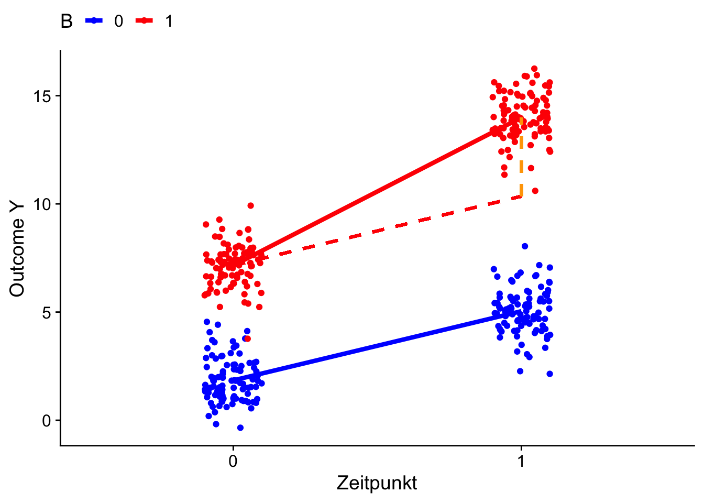
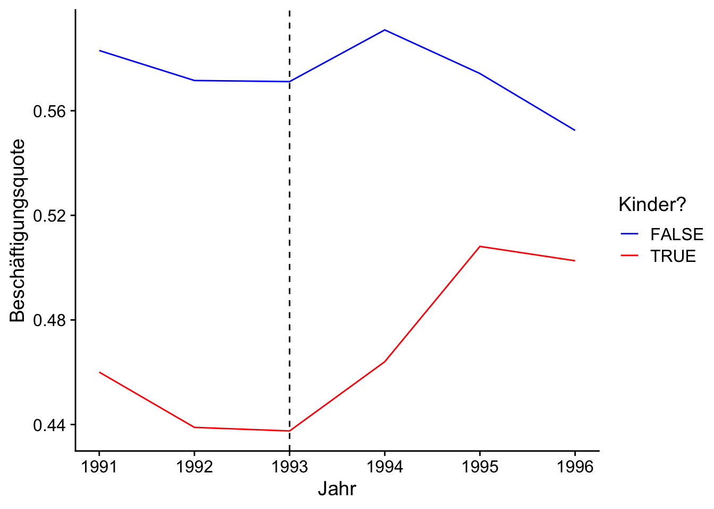
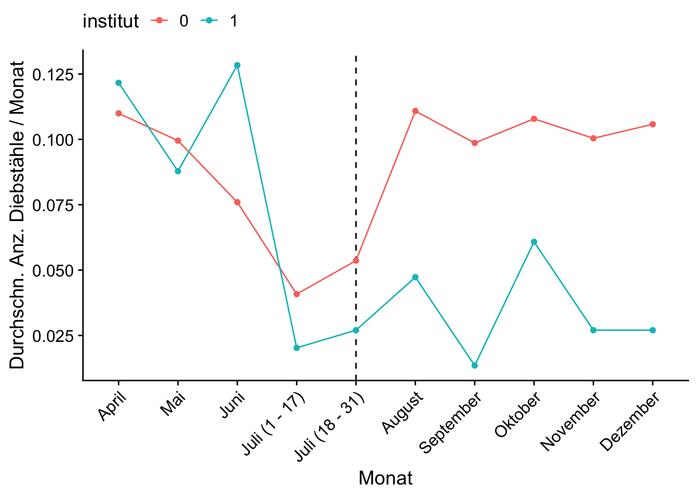

Der Difference-in-Differences (DID) Ansatz erlaubt die Schätzung kausaler Effekte in quasi-experimentellen Forschungsdesigns, in denen Boebachtungen für Kontroll- und Behandlungsgruppe zu mindestens zwei Zeitpunkten vorliegen und die Behandlung zwischen diesen Zeitpunkten stattfindet: Wir beobachten sowohl die Kontroll- als auch die Behandlungsgruppe vor und nachdem die Behandlung erfolgt ist. Die Motivation für die Anwendung des DID-Ansatzes liegt in der Fähigkeit, typische Risiken einer Verzerrungen zu umgehen, die bei einfachen Vorher-Nachher-Vergleichen oder reinen Querschnittsvergleichen auftreten können. Die Kernidee ist eine Schätzung des ATT durch einen Vergleich durchschnittlicher Differenzen der Outcome-Variable beider Gruppen zwischen den Perdioden vor und nach der Intervention. Abbildung 8.1 zeigt ein kausales Diagramm für ein Forschungsdesign, in dem DID den ATT identifizieren kann.
Abbildung 8.1: Kausales Diagramm für DID
Abbildung 8.1 illustriert Confounding bei der Bestimmung des Behandlungseffekts durch Backdoors in der Zeit \(t\) und der Gruppenzugehörigkeit:
Zeit: Der Behandlungszustand der behandelten Gruppe ändert sich durch die Intervention zwischen der Vor- und der Nachbehandlungsperiode. Die Outcome-Variable \(Y\) ändert sich für beide Gruppen über die Zeit hinweg.
Gruppenzugehörigkeit: Die Gruppenzugehörigkeit legt fest, ob eine Behandlung erfolgt. Systematische Unterschiede zwischen Behandlungs- und Kontrollgruppe wirken sich auf die Outcome-Variable \(Y\) aus.
In einem DID-Ansatz ermöglicht die Beobachtung von Kontroll- und Behandlungsgruppen jeweils bevor und nach einer Intervention das Herausrechnen von systematischen Unterschieden zwischen Behandlungs- und Kontrollgruppe und von Zeiteffekten, sodass die Backdoors durch Gruppenzugehörigkeit und Zeit geschlossen. Die Schätzung eines durchschnittlichen Behandlungseffekts erfolgt hierbei unter der Annahme, dass die Outcome-Variable beider Gruppen ohne die Intervention einen hinreichend ähnlichen Verlauf aufweisen würde und damit die Kontrollgruppe ein plausibles Counterfactual für die Behandlungsgruppe darstellt.
8.1 Einordnung im Potential Outcomes Framework
Im Potential Outcomes Framework nehmen wir an, dass jede Einheit \(i\) in Abhänigkeit ihres Behandlungsstatus zwei potentielle Ergebnisse hat. Wir unterscheiden zwischen Beobachtungen in Behandlungs- und Kontrollgruppe:
\(Y_{i,B}(1)\): \(Y\) für Einheit \(i\) in der Behandlungsgruppe, wenn diese behandelt wird.
\(Y_{i,B}(0)\): \(Y\) für Einheit \(i\) in der Behandlungsgruppe, wenn diese nicht behandelt wird.
\(Y_{i,K}(1)\): \(Y\) für Einheit \(i\) in der Kontrollgruppe, wenn diese behandelt wird.
\(Y_{i,K}(0)\): \(Y\) für Einheit \(i\) in der Kontrollgruppe, wenn diese nicht behandelt wird.
In einem DID-Forschungsdesign hängen tatsächliche und potentielle Outcomes von der Zeit \(t\) ab: Die Behandlungsgruppe wird zwischen den Zeitpunkten \(t = 0\) und \(t = 1\) behandelt, während die Kontrollgruppe unbehandelt bleibt. Für die Identifizierung des Behandlungseffekts wird unterstellt, dass \(Y\) sich zwischen \(t=0\) und \(t=1\) in der Behandlungsgruppe ohne eine Behandlung (im Erwartungswert) mit demselben Trend entwickelt hätte, mit dem sich die Kontrollgruppe tatsächlich entwickelt hat (parallele Trends). Die Gültigkeit paralleler Trends ist entscheidend für die Validität der DID-Methode, da so sicherstellt ist, dass die beobachteten Unterschiede in den Ergebnissen auf die Behandlung zurückzuführen sind und nicht auf andere zeitgleich auftretende Faktoren. Der Behandlungseffekt kann dann als eine Differenz von Differenzen geschrieben werden:
Der Effekt \(\beta_\textup{DID}\) ist ein ATT, der über das Schließen der Backdoor in der Zeit (rote und blaue Differenzen der Erwartungswerte zwischen \(t=0\) und \(t=1\)) sowie der Backdoor in der Gruppenzugehörigkeit (Differenz der Erwartungswert-Differenzen) identifiziert wird.
Eine Null-Ergänzung von \(\eqref{eq:DID-ATT1}\) mit \({\color{blue}\textup{E}\big[Y_K(0)\vert t=1\big] - \textup{E}\big[Y_K(0)\vert t=1\big]}\) zeigt die Wichtigkeit der Gültigkeit paralleler Trends:
Beachte, dass \({\color{red}\textup{E}\big[Y_B(0)\vert t=1\big]}\) der Erwartungswert des potentiellen Outcomes einer unbehandelten Behandlungsgruppe in \(t=1\) ist. Somit kann die Verzerrung durch nicht-parallele Trends nicht empirisch überprüft werden und muss ausschließlich durch das Forschungsdesign gewährleistet sein. In Anwendungen kann die Plausibilität der Annahme graphisch anhand geschätzter Trends in der Outcome-Variable oder durch Placebo-Tests untersucht werden.
Annahmen für DID
Parallele Trends: Die Trends in der Outcome Variable \(Y\) in Behandlungs- und Kontrollgruppe würden bis einschließlich \(t=1\) parallel verlaufen, wenn es keine Behandlung gäbe. Diese Annahme ist Voraussetzung dafür, dass Veränderungen im Outcome \(Y\) für die Behandlungsgruppe, die sich von \(Y\) für die Kontrollgruppe unterscheidet, auschließlich dem Effekt der Behandlung zugeschrieben werden kann.
Keine Interferenz und konsistente Behandlung (SUTVA):
Keine Interferenz: Die Behandlung eines Individums hat keinen Einfluss auf das potentielle Outcome anderer Individuen, unabhängig von der Gruppenzugehörigkeit.
Konsistete Behandlung: Es gibt keine Variation in der Intensität oder Art der Behandlung innerhalb der Behandlungsgruppe.
8.2 Schätzung des ATT mit DID
Für die Schätzung von \(\beta_\text{DID}\) ersetzen wir die Erwartungswerte in \(\eqref{eq:DID-ATT1}\) durch ihre Stichprobenmomente. Dies liefert den Schätzer
wobei \(\beta_3\) der interessierende Behandlungseffekt ist. Der Regressor \(B_i \times Z_t\) ist die Interaktion zwischen der Behandlungsgruppenzugehörigkeit \(B_i\) und einem Indikator für den Zeitpunkt nach der Intervention, \(Z_i = \mathbb{I}_{\{t=1\}}\). Beachte, dass wir in Modell \(\eqref{eq:DIDREG}\) für Zeiteffekte und Gruppenzugehörig kontrollieren und damit die sich durch das Forschungsdesign ergebenden Backdoors (vgl. Abbildung 8.1) schließen.
Es ist \(\widehat\beta_3 = \widehat{\beta}_\text{DID}\), d.h. der KQ-Schätzer von \(\beta_3\) ist der DID-Schätzer des ATT und numerisch äquivalent zu \(\eqref{eq:DIDMOMENTS}\). Die Berechnung von \(\widehat\beta_\text{DID}\) anhand von Modell \(\eqref{eq:DIDREG}\) ist praktisch, da wir so Inferenzstatistiken mit etablierten R-Funktionen wie summary() und lmtest::coeftest() wie gewohnt berechnen können.
In empirischen Anwendungen stehen oft Datensätze mit mehreren Gruppen und mehr als zwei Beobachtungsperioden zur Verfügung. Beachte, dass das Modell \(\eqref{eq:DIDREG}\) ein Spezialfall des allgemeinen Forschungsdesigns mit \(t=1,\dots,T\) für \(T\geq2\) Beobachtungsperioden und mehr als zwei Gruppen (mehrere Kontroll- und Behandlungsgruppen) ist. Eine dann häufig genutzte Modellspezifikation für die Schätzung des ATT mit DID ist eine Panel-Regression mit Two-way Fixed Effects,
wobei \(\theta_i\) und \(\eta_t\) Dummy-Variablen für Gruppen und Zeitperioden sind und \(D_{i,\, t}\) der Behandlungsindikator ist. Dieses lineare Paneldaten-Modell kann komfortabel mit dem R-Paket fixest (s. fixtest::feols()) implementiert werden. Bei mehreren Gruppen sollten cluster-robuste Standardfehler auf Gruppen-Ebene verwendet werden.
In Modell \(\eqref{eq:TWFEDIDREG}\) indentifiziert \(\beta_\text{DID}^\text{TWFE}\) den ATE, sofern die Annahmen 1 (parallele Trends) und 2 (SUTVA) gelten. Damit die Annahme paralleler Trends gewährleistet ist, dürfen keine heterogenen Behandlungseffekte vorliegen, d.h. die Behandlungseffekte
variieren nicht zwischen verschiedenen Gruppen
sind unabhängig vom Zeitpunkt der Behandlung (relevant bei unterschiedlichen Behandlungszeitpunkten)
1 Siehe bspw. Goodman-Bacon (2021) für eine detaillierte Diskussion dieser Problematik.
2 Die Methoden von Callaway und Sant’Anna (2021) sind im R-Paket did implementiert.
Der Umgang mit heterogenen Behandlungseffekten ist Gegenstand der aktuellen ökonometrischen Forschung zu DID-Schätzern. Callaway und Sant’Anna (2021) schlagen eine nicht-parametrische Schätzung von gruppenspezifischen ATE zu veschiedenen Zeitpunkten vor, die zu einem globalen ATT zusammengefasst werden können.2
Key Facts zum einfachen DID-Schätzer
Im DID-Forschungsdesign kann der ATT durch einen Vergleich von Differenzen in den Ergebnissen vor und nach einer Behandlung zwischen Behandlungs- und Kontrollgruppen identifiziert werden.
DID benötigt Beobachtungen einer Behandlungs- und einer Kontrollgruppe zu mindestens zwei verschiedenen Zeitpunkten, wobei der Behandlung zwischen diesen Zeitpunkten erfolgt.
DID ist empfindlich gegenüber Verletzungen der Annahme, dass die zeitlichen Trends in der Outcome-Variable für die Behandlungs- und die Kontrollgruppen vor der Intervention parallel verlaufen.
DID-Schätzer können in linearen Interaktionsmodellen mit Fixed Effects für Zeitperioden und Gruppenzugehörigkeit implementiert werden. Der interessierenden Effekt sind die Koeffizienten von Interaktionstermem zwischen den Indikatoren für die Nachbehandlungsperioden und für die Zugehörigkeit zu einer Behandlungsgruppe.
In R können DID-Modelle mit lm() oder, in Fällen mit mehr als zwei Beobachtungsperioden, mit fixest::feols() geschätzt werden. In Forschungsdesigns mit mehreren Gruppen sollten cluster-robuste Standardfehler verwendet werden.
Die nachfolgende interaktive Grafik illustriert die Schätzung des ATT mit DID sowie die Verletzung der Annahme paralleler Trends anhand simulierte Daten für mehrere Zeitperioden. Der verwendete DID-Schätzer ist der KQ-Schätzer in Modell \(\eqref{eq:DIDREG}\), d.h. wir betrachten ein Forschungsdesign in dem zwei Zeitperioden für die Schätzung verwendet werden, wobei die Behandlung zwischen diesen Perioden erfolgt.
Interaktive Elemente der Visualisierung
Die Beobachtungen der Individuen zu 6 verschiedenen Zeitpunkten werden als Punkte dargestellt. Die Datenpunkte könn mit Zeige Daten ein- und ausgeblendet werden.
Die geschätzten Trends beider Gruppen für den gesamten Beobachtungszeitraum und die Gruppenzugehörigkeit können mit Zeige Trends ein- und ausgeblendet werden. Die Auswahl Parallele Trends stellt sicher, dass beide Gruppen (mit Ausnahme des Behandlungseffekts in der Behandlungsgruppe) dem selben zeitlichen Trend folgen. Bei nicht-parallelen Trends folgt die Behandlungsgruppe einem positiven Trend mit größerer positiver Steigung als in der Kontrollgruppe.
Die Behandlung erfolgt zwischen der mit dem Slider Zeitpunkt ausgewählten und der darauf folgenden Periode. Der tatsächliche Behandlungseffekt kann über den Slider Effekt festgelegt werden.
Anatomie der Schätzung des ATT bei parallelen Trends
Wir illustrieren die Schätzen des ATT mit Formel \(\eqref{eq:DIDMOMENTS}\). Kreise zeigen Mittelwerte für Kontroll- und Behandlungsgruppe vor der Intervention. Dreiecke zeigen Mittelwerte nach der Intervention.
Die gestrichelte rote Linie zeigt den (kontrafaktischen) Verlauf der Behandlungsgruppe ohne Behandlung. Hierbei wird unterstellt, dass sich die Behandlungsgruppe mit demselben Trend wie die Kontrollgruppe entwickelt hätte (blaue Linie).
Der geschätzte Behandlungseffekt wird als orangene vertikale Linie dargestellt. Dies ist die Differenz zwischen dem tatsächlichen post-Behandlungs-Mittelwert und dem kontrafaktischen Mittelwert der Behandlungsgruppe.
Anatomie der Schätzung des ATT bei nicht-parallelen Trends
Für nicht-parallele Trends zeigt die Grafik den unterstellten kontrafaktischen Trend der Behandlungsgruppe als gestrichelte blaue linie. Der” “tatsächliche” kontrafaktische Verlauf der Behandlungsgruppe wird als gestrichelte rote Linie dargestellt.
Aufgrund des steileren (positiven) Trends in der Behandlungsgruppe ergibt sich eine positive Verzerrung von \(\color{orange}\widehat{\beta}_\text{DID}\). Diese Verzerrung wird durch die gestrichelte vertikale schwarze Linie kenntlich gemacht.
Für positive Behandlungseffekte wird der ATT überschätzt: die Verzerrung entspricht der Überlagerung der gestrichelten schwarzen linie mit der orangenen Linie des geschätzten Effekts.
Für negative Behandlungseffekte wird der ATT unterschätzt: die Verzerrung entspricht der gestrichelten schwarzen Linie oberhalb der orangenen Linie des geschätzten Effekts.
8.3 Schätzung von DID-Forschungsdesigns mit R
Wir erläutern nachfolgend die Schätzung von DID-Designs mit zwei Zeitperioden mit R und visualisieren die geschätzten Komponenten von \(\widehat{\beta}_\text{DID}\) ähnlich wie in der interaktiven Visualisierung. Hierzu erzeugen wir simulierte Daten gemäß der Vorschrift
\[\begin{align*}
Y_{i,t} &= 2 + 3 \cdot Z_t + 5 \cdot B_i + 4 \cdot (Z_t \cdot B_i) + \epsilon_{i,t}\\
\epsilon_{i,t} &\sim N(0, 1)\\
Z_t &= \mathbb{I}_{\{ t = 1 \}} \\
B_i &= \mathbb{I}_{\{ i \in \textup{Behandlungsgruppe} \}},
\end{align*}\] wobei wir jeweils \(100\) Beobachtungen beider Gruppen zu beiden Zeitpunkten generieren.
library(tibble)library(dplyr)# Seed setzenset.seed(1234)# Anzahl der Beobachtungen (pro Gruppe u. Zeitpunkt)n<-100# Daten simulierendid_data<-tibble( Z =rep(rep(c(0, 1), each =n), times =2), B =rep(c(0, 1), each =2*n), epsilon =rnorm(4*n), outcome =2+3*Z+5*B+4*Z*B+epsilon)# Überblickglimpse(did_data)
Mit lm() implementieren wir ein einfaches Interaktionsmodell und lesen den geschätzten Effekt aus.
# Modell mit Regression schätzendid_model<-lm( formula =outcome~Z*B, data =did_data)# Geschätzten ATE auslesen(estimated_effect<-coef(did_model)["Z:B"])
Z:B
3.639286
Die Schätzung des Behandlungseffekts von \(3.64\) liegt nahe beim wahren Effekt von \(4\). Eine äquivalente Schätzung können wir mit fixest::feols() erhalten.
library(fixest)# Interaktionsmodell mit feols() schätzenfeols( fml =outcome~Z*B, data =did_data)
Beachte, dass im Formel-Argument fml mit I(Z * B) lediglich der Interaktionseffekt als Regressor festgelegt wird. Fixe Effekte für Gruppenzugehörigkeit und Zeitpunkte werden durch den Zusatz | B + Z spezifiziert.3 Diese Reihenfolge führt zur Berechnung von cluster-robusten Standardfehlern auf Gruppen-Ebene (B). Wie erwartet können wir anhand des \(t\)-Tests die Nullhypothese \(H_0:\,\beta_\text{DID} = 0\) zu jeden relevanten Signifikanzniveau ablehnen.
3I(Z * B) statt Z * B stellt sicher, dass perferkte Multikollinearität aufgrund der Fixed-Effekts für B und Z vermieden wird.
Für die Visualisierung der Schätzung mit ggplot2::ggplot() berechnen wir zunächst Stichprobenmittelwerte für die Outcome-Variable y beider Gruppen zu beiden Zeitpunkten.
# A tibble: 4 × 3
Z B mean_outcome
<dbl> <dbl> <dbl>
1 0 0 1.8
2 0 1 7.2
3 1 0 5.0
4 1 1 14.
Die Stichprobenmittelwerte in means ermöglichen uns die Schätzung von \(\textcolor{red}{E(Y_B(0)|t=2)}\), das kontrafaktische erwartete Outcome (counterfactual) der Behandlungsgruppe zum Zeitpunkt \(t=2\),
# Counterfactual für Behandlungsgruppe in t=1(counterfactual<-means%>%filter(Z==0&B==1)%>%pull(mean_outcome)+(means%>%filter(Z==1&B==0)%>%pull(mean_outcome)-means%>%filter(Z==0&B==0)%>%pull(mean_outcome)))
[1] 10.35
Der geschätzte Behandlungseffekt ist \[\begin{align*}
\textcolor{orange}{\widehat{\beta}_\text{DID}} =&\, \textcolor{red}{\overline{Y_B(1)\vert t=2}} - \textcolor{red}{\overline{Y_B(0)\vert t=2}}\\
=&\,\textcolor{red}{14} - \textcolor{red}{10.4}\\
=&\, \textcolor{orange}{3.6}.
\end{align*}\]
Wir plotten die Daten mit ggplot2 und zeichnen die Trends sowie den geschätzten Behandlungseffekt ein.
# Simulierte daten plottendid_data%>%ggplot( mapping =aes( x =factor(Z), y =outcome, color =factor(B), group =factor(B)))+geom_point( position =position_jitter( width =.1, seed =1234))+labs( x ="Zeitpunkt", y ="Outcome Y", color ="B")+scale_color_manual( values =c("1"="red", "0"="blue"))+# Trendlinien einzeichnenstat_summary( fun =mean, geom ="line", size =1.5)+# Counterfactual für B-Gruppe einzeichnengeom_segment( mapping =aes( x =1, xend =2, y =means$mean_outcome[means$Z==0&means$B==1], yend =counterfactual), linetype ="dashed", color ="red", size =1)+# gesch. Behandlungseffekt einzeichnengeom_segment( mapping =aes( x =2, xend =2, y =counterfactual, yend =counterfactual+estimated_effect), linetype ="dashed", color ="orange", size =1)+theme_cowplot()+theme(legend.position ="top")

Abbildung 8.2: Einfache DID-Schätzung mit R für simulierte Daten
8.4 Case Study: Effekt von Steuererleichterungen auf Erwerbsbeteilligung
Der Earned Income Tax Credit (EITC) ist ein Steuerguthaben für US-Amerkanische Familien, die unterhalb einer gesetztlich festgelegten Einkoemmnsgrenze liegen. Der genaue Betrag des EITC hängt gestaffelt vom Einkommen ab und, ähnlich zum Kindergeld in Deutschland, steigt mit der Anzahl der zu versorgenden Kinder. Ein wichtiger Unterschied zum Kindergeld ist, dass der EITC nicht beantragt werden muss: Qualifizierten Familien wird der Betrag automatisch durch die Behörden im Jahressteuerausgleich gutgeschrieben. Somit kann Selbstselektion in die Behandlungsgruppe ausgeschlossen werden, da sich die Behandlung ausschließlich durch die im Rahmen der EITC-Ausweitung geänderten Anspruchsgrundlagen ergibt.
Eissa und Liebman (1996) betrachten Veränderungen in der EITC-Gesetzgebung als Intervention, deren Auswirkungen mit sozio-ökonomischen Paneldaten in einem DID-Ansatz untersucht werden können. Die Studie analysiert die Auswirkungen der ersten Ausweitung des EITC im Jahr 1986 auf die Erwerbsbeteiligung und die Löhne von Müttern im erwerbsfähigen Alter. Diese Erweiterung erhöhte die gewährten Steuererleichterungen und die zur Qualifikation für das Programm zu unterschreitende Einkommensgrenze.
Ein zentraler Befund der Studie ist, dass die EITC-Ausweitung von 1986 einen statistisch signifikanten Anstieg der Arbeitsbeteiligung alleinerziehender Frauen von geschätzten 3% bewirkt hat. Eissa und Liebman (1996) finden weiterhin signifikante positive Effekte auf die geleisteten Arbeitsstunden und Evidenz für Einkommensverbesserungen in dieser Gruppe. Die Studienergebnisse sind starke Evidenz, dass Maßnahmen wie der EITC effektiv dazu beitragen können, die Erwerbssituation in der Zielgruppe zu steigern und somit die wirtsschafts- und sozialpolitische Ziele derartiger Programme realisierbar sind.
Im Jahr 1993 wurde das Programm erneut ausgweitet: Vor 1993 gab es lediglich eine Einkommensstufe für Familien mit Kindern. 1993 wurde eine zusätzliche Stufe für Familien mit zwei oder mehr Kindern eigeführt, die damit einen höheren maximalen Kreditbetrag erhalten konnten als Familien mit nur einem Kind. Dies führte zu einer größeren steuerlichen Entlastung armutsbedrohter Familien.
Adireksombat (2010) untersucht die Effekte der zweiten EITC-Ausweitung ebenfalls mit einem DID Ansatz und findet Evidenz für einen Anstieg der Arbeitbeteiligung von etwa 5% in der Zielgruppe alleinerziehender Frauen mit mindestens 2 Kindern.
Zur Illustration der empirischen Anwendung von DID mit R untersuchen wir Effekte der EITC-Ausweitung von 1993 nachfolgend anhand eines ähnlichen Datensatzes aus dem CPS wie in der Studie von Adireksombat (2010). Diese Daten umfassen jährliche sozio-ökonomische Merkmale für US-amerikanische Frauen im Zeitraum von 1991 bis 1996 und sind in der Datei eitc_data.csv verfügbar.
Eine Übersicht des Datensatzes eitc_data ist in Tabelle 8.1 dargestellt.
Variable
Beschreibung
state
ID-Code Bundesstaat
year
Steuerjahr
urate
Arbeitslosenquote im Bundesstaat (%)
children
Anz. Kinder der Frau
nonwhite
Dummy für nicht-weiße Frauen
finc
Haushaltseinkommen im Steuerjahr (US-$)
earn
Einkommen der Frau im Steuerjahr (US-$)
age
Alter
ed
Ausbildungsniveau der Frau (Jahre)
work
Dummy für Berufstätigkeit
unearn
= Haushaltseinkommen - Einkommen der Frau (Tsd. US-$)
Tabelle 8.1: Sozi-ökomonische Variablen zu US-Familien aus dem CPS
Wir erweitern das tibble-Objekt zunächst um eine Dummy-Variable für Mütter (anykids), sowie spezifischere Dummies für Frauen mit einem Kind (onechild) oder mit zwei oder mehr Kindern (twomorekids). Weiterhin erzeugen wir einen Indikator für Beobachtungen nach der EITC-Ausweitung im Jahr 1993 (after1993).
# Dummies für Frauen mit Kindern# und Post-Interventionsprediode hinzufügen eitc_data<-eitc_data%>%mutate( onechild =if_else(children==1, TRUE, FALSE), twomorekids =if_else(children>=2, TRUE, FALSE), anykids =if_else(children>0, TRUE, FALSE), after1993 =if_else(year>1993, TRUE, FALSE))
Einen Überblick über den modifizierten Datensatz erhalten wir mit glimpse().
Die Plausibilität der Annahme paralleler Trends können wir graphisch anhand einer Gegenüberstellung der Beschäftigungsquote (avg.work = mean(work)) für Frauen mit und ohne Kindern (anykids) über die Zeit (year) einschätzen. Wir gruppieren hierzu den Datensatz entsprechend und fassen die Outcome-Variable (work) gruppenweise zusammen.
# Graphischer Vergleich der Trendsggplot(data =eitc_summarised)+geom_line( mapping =aes( x =year, y =avg.work, col =anykids))+# Indikator für EITC-Erweiterung 1993geom_vline( xintercept =1993, lty ="dashed")+scale_x_continuous("Jahr")+scale_y_continuous("Beschäftigungsquote")+scale_color_manual( values =c("TRUE"="red", "FALSE"="blue"))+guides(color =guide_legend(title ="Kinder?"))+theme_cowplot()

Abbildung 8.3: Trends in der Erwerbsbeteiligung US-amerikanischer Frauen im CPS-Datensatz
Abbildung 8.3 zeigt, dass die Beschäftigungsquote für kinderlose Frauen deutlich oberhalb der Quote für Mütter verläuft. Die Trends vor der EITC-Ausweitung im Jahr 1993 sind sehr ähnlich, sodass eine parallele Entwicklung plausibel scheint.
8.4.1 Schätzungen des ATT mit linearen Modellen
Wir berechnen Zunächst den Behandlungseffekt der für Frauen mit Kindern relativ zu kinderlosen Frauen gemäß \(\eqref{eq:DIDMOMENTS}\), wobei wir jeweils sämtliche Perioden vor und nach der Behandlung einbeziehen. Dies führt zu den Ergebnissen in Tabelle 8.2, wobei \[\begin{align}
\textcolor{orange}{\widehat\beta_\text{DID}} = (\textcolor{red}{B} - \textcolor{red}{A}) - (\textcolor{blue}{D} - \textcolor{blue}{C})
\end{align}\] der geschätzte Behandlungseffekt ist.
Wir erhalten also eine positive Schätzung des Behandlungseffekts. Die Interpretation ist, dass die Ausweitung des EITC im Jahr 1993 zu einem Anstieg der Erwerbsbeteiligung in der Gruppe der Frauen mit Kindern von durchschittlich \(4.69\%\) in den Folgeperioden geführt hat.
Für die Berechnung von Inferenzstatistiken bezüglich \(\beta_\text{DID}\) schätzen wir ein lineares Interaktionsmodell gemäß \(\eqref{eq:DIDREG}\),
Anhand der Dummy-Variablen für Bundesstaaten (\(\theta_\text{Staat}\)) und Jahre (\(\eta_t\)) kontrollieren wir für unbeobachtete zeitinvariante Unterschiede zwischen den Bundesstaaten sowie für allgemeine zeitliche Trends und Schocks, die alle Bundesstaaten in einem bestimmten Jahr betreffen. Dies schließt etwaige Backdoor-Pfade durch den Einfluss spezifischer Eigenschaften der Bundesstaaten (Kultur, Geografie, langfristige politische Einstellungen, etc.) und gemeinsamer zeitlicher Einflüsse.
library(fixest)(DID_twoway<-feols( fml =work~anykids+I(anykids*after1993)|state+year, data =eitc_data))
Die Schätzung des ATT bei Kontrolle für Zeit- und Bundesstaat-Effekte in \(\eqref{eq:eitcmodfe}\) unterscheidet sich nur geringfügig gegenüber dem Ergebnis für das Modell \(\eqref{eq:eitcmod}\). Beachte, dass der Behandlungseffekt auch bei geclusterten Standardfehlern auf Bundesstaaten-Ebene (| state + year) signifikant ist.
Ein weiterer Vorteil von DID-Schätzungen mit Regression ist die Möglichkeit zur Kontrolle für individuen-spezifische Kovariablen, um Backdoors aufgrund systematischer Unterschiede zwischen Kontroll- und Behandlungsgruppen zu vermeiden.
Wir erweitern Modell \(\eqref{eq:eitcmodfec}\) um sozio-ökonomische Charakteristika der Frauen: Einen Dummy für nicht-weiße Frauen (nonwhite), quadratische Terme in Alter (age) und Ausbildungsniveau (ed) sowie weitere Einkünfte des Haushalts (unearn),
Die Schätzung von \(\eqref{eq:eitcmodfec}\) ergibt mit \(0.0558\) eine etwas größere Schätzung eines positiven signifikanten Effekt der EITC-Ausweitung auf die Erwerbsbeteiligung von Müttern.
Wie oben erläutert, führte die EITC-Ausweitung von 1993 unter anderem ein Stufensystem für die Höhe des EITC in Ahängigkeit der Kinder-Anzahl ein, sodass unterschiedlich starke Anreize zur Aufnahme einer Beschäftigung für Mütter mit nur einem Kind und mehreren Kindern plausibel sind. Anhand der Dummy-Variablen für (genau) ein Kind (onechild) sowie zwei oder mehr Kinder (twomorekids) können wir eine differenziertere Schätzung des Effekts hinsichtlich des Betreuungsaufwands erhalten. Hierzu modifizieren wir Modell \(\eqref{eq:eitcmodfec}\) entsprechend:
Die interessierenden geschätzten Koeffizienten von I(onechild * after1993) und I(twomorekids * after1993) sind \(0.0405\) und \(0.0648\). Auch hier sind die Koeffizienten signifikant von null verschieden. Der größere Koeffizient für den Effekt auf Mütter mit zwei oder mehr Kinder liefert Evidenz dafür, dass die Einführung der Zahlstufe für größere Familien im Rahmen der EITC-Ausweitung von 1993 tatsächlich einen etwas stärkeren Anreiz auf die Zielgruppe mit mehreren Kindern hatte.
8.4.2 Probit-Spezifikationen
In sämtlichen Modellen in Kapitel 8.4.1 haben wir \(\text{work}_{i,t}\) als kontinulierliche Variable behandelt und den bedingten Erwartungswert als lineare Funktion modelliert. Da \(\text{work}_{i,t}\) eine binäre Variable ist, haben wir damit implizit die bedingte Wahrscheinlichkeit der Erwerbsbeteiligung \(P(\text{work}_{i,t} = 1\vert \boldsymbol{x}_{i,t})\) modelliert. Wie in Kapitel 3.2.1 erläutert, kann ein solches lineares Wahrscheinlichkeitsmodell (LPM) einen nicht-linearen Verlauf der Wahrscheinlichkeitsfunktion \(P(\text{work}_{i,t} = 1\vert \boldsymbol{x}_{i,t})\) nicht exakt abbilden, wobei tatsächliche Behandlungseffekte unter- oder überschätzt werden können. In manchen Fällen können geschätzte Wahrscheinlichkeiten sogar außerhalb des Intervalls \([0,1]\) liegen. Statt eines LPM sollte ein generalisiertes lineares Modell (GLM) verwendet werden.
Wir modellieren nachfolgend den Effekt der EITC-Anpassung auf die Wahrscheinlichkeit einer Erwerbsbeteiligung von Müttern mit Probit-Regression. Anstatt stats::glm() verwenden wir fixest::feglm().4 Analog zu fixest::feols() erlaubt fixest::feglm() die Schätzung von Probit-Regressionen mit Fixed Effekts. Partielle Effekte können mit dem Paket marginaleffects berechnet werden. Wir schätzen zunächst eine Fixed-Effects-Probit-Regression analog zu \(\eqref{eq:eitcmodfe}\), d.h.
Die Struktur von feglm() folgt dem selben Schema wie feols(). Das zusätzliche Argument family = binomial("probit") legt die entsprechende Link-Funktion fest.
# Probit-Regression mit TWFE(EITC_DID_probit<-feglm( fml =work~anykids+int_anykids|state+year, family =binomial("probit"), data =eitc_data))
Die Schätzung ergibt einen positiven Effekt für int_anykids. Wie im linearen Modell ist der Koeffizient von int_anykids signifikant. Beachte, dass dieser Koeffizient die geschätzte Änderung der latenten Variable des Probit-Modells misst und nicht direkt als Behandlungseffekt interpretiert werden darf. Stattdessen können wir mit marginaleffects::avg_slopes() den durchschnittlichen partiellen Effekt des Interaktionsterms für Frauen in der Behandlungsgruppe für die Jahre 1994 bis 1996 berechnen. marginaleffects::datagrid() setzt Variablen ohne spezifizierte Werte auf ihren Mittelwert (kontinuierlich) oder Modus (kategorisch). Der Modus von state ist 93 (California).
Der geschätzte durchschnittliche partielle Effekt der EITC-Ausweitung für Mütter im Bundesstaat California für die Jahre 1994 bis 1996 ist eine Erhöhung der Wahrscheinlichkeit der Erwerbsbeteiligung um etwa \(4.57\%\).
Analog zu Modell \(\eqref{eq:eitcmodfecd}\) kontrollieren wir in einer weiteren Regression zusätzlich für sozio-ökonomische Charakteristika und differenzieren zwischen dem Effekt für Frauen mit einem Kind und Müttern mit zwei oder mehr Kindern anhand des Modells
# Probit-FE-Regression mit Kontrollvariablen# und Differenzierung des Effekts(EITC_DID_probit<-feglm( fml =work~onechild+int_onechild+twomorekids+int_twomore+unearn+nonwhite+age+ed+I(ed^2)+I(age^2)|year+state, family =binomial("probit"), data =eitc_data))
Wir können nun zwei partielle Effekte berechnen: 1. für int_onechild und 2. für int_twomore. Hierzu setzten wir jeweils die übrigen Dummy-Variablen mit Bezug zur Anzahl der Kinder auf null. Weiterhin setzen wir nonwhite = 0, d.h. wir betrachten den Effekt für weiße Frauen im Bundesstaat California, wobei die übrigen Regressoren den Wert der jeweiligen Stichprobenmittel haben.
Ähnlich wie in Modell \(\eqref{eq:eitcmodfecd}\) erhalten wir signifikante positive Schätzungen. Der durchschnittliche Effekt für int_twomore ist mit einer Erhöhung der Wahrscheinlichkeit zur Aufnahme einer Beschäftigung von etwa \(6.16\%\) etwas höher als die \(4.11\%\) für int_onechild.
8.5 Case Study: Effekt von Polizeipräsenz auf Autodiebstähle
Nach einem Terroranschlag auf das größte jüdische Gemeindezentrum in Buenos Aires am 18. Juli 1994 wurden sämtliche jüdische und muslimische Einrichtungen in der Stadt rund um die Uhr von der argentinischen Polizei geschützt. Somit führte dieses Ereignis zu einer geografischen quasi-experimentellen Allokation von Polizeikräften in Gegenden mit entsprechenden Einrichtungen. In einem Forschungsdesign, dass die lokale Straßenkriminalität Kriminalität erklären soll, kann die sich aus der Allokation ergebende Variation in der Polizeipräsenz als exogen angenommen werden. Di Tella und Schargrodsky (2004) nutzen diesen Umstand, um anhand von Polizeistatistiken und Daten zu Autodiebstählen in Buenos Aires vor und nach dem Terroranschlag den Effekt erhöhter Polizeipräsenz auf die Kriminalität in einem Difference-in-Differences-Ansatz zu untersuchen. Die Studienergebnisse deuten darauf hin, dass es einen starken abschreckenden Effekt von Polizeistreifen gibt, der sich nur in einem engen Umkreis um Häuserblocks in denen die Polizeipräsenz erhöht wurde, auswirkt.
In diesem Kapitel reproduzieren wir Kernergebnisse der Studie mit R. Die benötigten Daten sind auf der Webseite der American Economic Association verfügbar. Die Daten stammen aus drei nicht zusammenhängenden Stadtvierteln von Buenos Aires die etwa \(3.2\%\) der Stadtfläche ausmachen und \(6.9\%\) der Bevölkerung beherbergen, wobei sich jedem Viertel eine Polizeistation befindet. Bei den untersuchten Stadtvierteln handelt es sich um die Viertel mit der größten Anzahl jüdischer Einrichtungen in der Stadt. Der Großteil der Häuserblocks in diesen Vierteln (insgesamt 876 Blocks) liegen nicht in der Nähe einer geschützten Einrichtung. Blocks die mehr als zwei Blocks von einer geschützten Einrichtung entfernt liegen, bilden die Kontrollgruppe.
Wir verwenden nachfolgend den modifizierten Datensatz polizeipraesenz.RDS.
Tabelle 8.3: polizeipraesenz: Autodiebstähle in Buenos Aires
8.5.1 Trend-Vergleich
Zur Einschätzung der Annahme paralleler Trends berechnen wir zunächst die Durschnittliche Anzahl an Autodiebstählen Blocks mit bzw. ohne jüdische Institutionen für die Monate April bis Dezember. Beachte, dass die Variable monat zwei Ausprägungen für den Monat des Anschlags aufweist: Juli (1 - 17) für die Juli-Tage vor dem Anschlag und für die verbleibenden Tage Juli (18 - 31).
# A tibble: 20 × 3
# Groups: monat [10]
monat institut `Durchschn. Diebstähle`
<ord> <fct> <dbl>
1 April 0 0.11
2 April 1 0.12
3 Mai 0 0.10
4 Mai 1 0.088
5 Juni 0 0.076
6 Juni 1 0.13
7 Juli (1 - 17) 0 0.041
8 Juli (1 - 17) 1 0.020
9 Juli (18 - 31) 0 0.054
10 Juli (18 - 31) 1 0.027
11 August 0 0.11
12 August 1 0.047
13 September 0 0.099
14 September 1 0.014
15 Oktober 0 0.11
16 Oktober 1 0.061
17 November 0 0.10
18 November 1 0.027
19 Dezember 0 0.11
20 Dezember 1 0.027
Die in polizeipraesenz_Trends erfasste Trendentwicklung für Blocks in der Behandlungsgruppe (institut == 1) und in der Kontrollgruppe (institut == 0) plotten wir mit ggplot2().
# Trends plottenpolizeipraesenz_Trends%>%ggplot( mapping =aes( x =monat, y =`Durchschn. Diebstähle`, color =institut, group =institut))+geom_line()+geom_vline( xintercept ="Juli (18 - 31)", lty ="dashed")+geom_point()+labs( x ="Monat", y ="Durchschn. Anz. Diebstähle / Monat")+theme_cowplot()+theme( axis.text.x =element_text( angle =45, hjust =1), legend.position ="top")

Abbildung 8.4: Geschätzte Trends für Autodiebstähle in Buenos Aires im Jahr 1994
Abbildung 8.4 zeigt einen ähnlichen Verlauf der Trends für den Zeitraum unmittelbar vor dem Anschalg am 18. Juli.
Tabelle 2 in Di Tella und Schargrodsky (2004) präsentiert t-Tests für Unterschiede in der Mittleren Anzahl der Diebstähle pro Monat zwischen Blocks mit jüdischen Einrichtungen und verschiedenen distanz-basierten Untergruppen von Blocks ohne eine jüdische Einrichtungen für jede Periode. Zur Reproduktion dieser Ergebnisse erstellen zunächst eine Listen-Spalten für die beobachteten Diebstähle in Abhängigkeit der Distanz zum nächsten Block mit einer jüdischen Einrichtung.
d2more Zwei oder mehr Blocks entfernt
d2: Zwei Blocks entfernt
d1: Ein Block entfernt
same: Jüdische Einrichtung im selben Block
(dat_listcol<-polizeipraesenz%>%group_by(observ, monat)%>%transmute( d2more =list(totrob[distanz>2]), d2 =list(totrob[distanz==2]), d1 =list(totrob[distanz==1]), same =list(totrob[institut==1])))
Mit summarise() können wir Stichprobenmittel und Standardabweichungen der Diebstähle in Blocks dieser Kategorien für alle Perioden berechnen. Anschließend kombinieren wir die Ergebnisse jeweils mit sprintf() und formatieren das Ergebnis mit modelsummary::modelsummary_df().5Tabelle 8.4 Zeit die Spalten A bis D aus Tabelle 2 in Di Tella und Schargrodsky (2004).
5"%.4f\n(%.4f)" gibt das Format des resultierenden character an: Mittelwerte und SDs (in Klammern), gerundet auf vier Nachkommastellen. \n bewirkt einen Zeilenumbruch.
Tabelle 8.4: Deskriptive Statistiken für Diebstähle nach Entfernung zur nächsten jüdischen Einrichtung
Der nächste Chunk reproduziert die Spalten E bis F von Tabelle 2 in Di Tella und Schargrodsky (2004). Die Einträge sind Mittelwertdifferenzen (Standardfehler in Klammern) zwischen den betrachteten Gruppen von Blocks sowie Ergebnisse für t-Tests (Signifikanz-Sternchen) der Hypothese, dass die jeweilige mittlere Anzahl an Autodiebstählen nicht verschieden ist.
Wir definieren zunächst eine Funktion format_ttest(), die die gewünschen Statistiken aus einem mit t.test() berechneten Objekte ausliest und entsprechend formatiert. Anschließend nutzen wir diese Funktion, um die Daten in dat_listcol entsprechend der Definition in Di Tella und Schargrodsky (2004) für jeden Monat zusammenzufassen. Die Ergebnisse formatieren wir wieder mit datasummary_df().
# Funktion: Ergebnisse von t.test() # mit Signifikanzsternchenformat_ttest<-function(ttest_result){estimate<-diff(ttest_result$estimate)stderr<-ttest_result$stderrp_value<-ttest_result$p.valuestars<-if(p_value<0.001){"***"}elseif(p_value<0.01){"**"}elseif(p_value<0.05){"*"}else{""}sprintf("%.4f (%.4f)%s", estimate, stderr, stars)}# Berechnung der t-Tests, Formatierung der Ergebnisseresults<-dat_listcol%>%group_by(monat)%>%summarise("(E) Diff: B - A"=format_ttest(t.test(unlist(d2more), unlist(same))),"(F) Diff: C - A"=format_ttest(t.test(unlist(d2more), unlist(d1))),"(G) Diff: D - A"=format_ttest(t.test(unlist(d2more), unlist(d2))))# Formatierung der Tabelle mit modelsummary_df()modelsummary::datasummary_df(results)
tinytable_ltusa8xn0rz3yptjlp7n
monat
(E) Diff: B - A
(F) Diff: C - A
(G) Diff: D - A
April
0.0221 (0.0606)
0.0216 (0.0255)
0.0232 (0.0230)
Mai
-0.0206 (0.0356)
-0.0308 (0.0181)
-0.0111 (0.0205)
Juni
0.0498 (0.0480)
-0.0009 (0.0193)
-0.0088 (0.0155)
Juli (1 - 17)
-0.0190 (0.0133)
0.0197 (0.0179)
-0.0083 (0.0116)
Juli (18 - 31)
-0.0122 (0.0146)
0.0337 (0.0185)
0.0293 (0.0173)
August
-0.0711 (0.0318)*
-0.0516 (0.0220)*
0.0088 (0.0244)
September
-0.0883 (0.0153)***
-0.0117 (0.0249)
-0.0033 (0.0205)
Oktober
-0.0603 (0.0376)
-0.0233 (0.0241)
-0.0326 (0.0201)
November
-0.0692 (0.0172)***
0.0140 (0.0254)
0.0055 (0.0184)
Dezember
-0.0747 (0.0181)***
0.0147 (0.0253)
0.0044 (0.0196)
Tabelle 8.5: Mittelwertdifferenzen in Autodiebstählen und t-Tests
Tabelle 8.5 zeigt eine einschlägige Entwicklung der Differenzen über die Zeit: In den Monaten vor dem Anschlag (und der anschließenden Allokation von Polizeipräsenz) bestehen weder zwischen weit entfernten Blocks und solchen mit einer jüdischen Einrichtung (Spalte E) noch zwischen Blocks ohne eine Einrichtung (Spalten F und G) signifikante unterschiede in der Anzahl der Autodiebstähle. Nach der politischen Intervention ergibt sich ein anderes Bild: In Spalte (E) von Tabelle 8.5 finden wir signifikante negative Differenzen. Dies ist Evidenz, das die Kriminalität in besonders gut bewachten Blocks (Spalte B in Tabelle 8.4) in den Folgeperioden des Anschlags geringer war als in Blocks die, mehr als zwei Blocks von einer bewachteten Einrichtung entfernt sind (Spalte A in Tabelle 8.4). Mit Ausnahme einer Signifikanten Differenz im August 1994 finden wir keine Hinweise auf derartige Unterschiede zwischen Blocks in den Kontrollgruppen (Spalten F und G).
8.5.2 Two-Way-Fixed-Effects-Schätzungen
Di Tella und Schargrodsky (2004) betrachten (Sub-Modelle) der folgenden Regressionsspezifikation für die Schätzung des Effekts von Polizeipräsenz auf die Anzahl der Autodiebstähle.
Hierbei sind \(\text{monat}_t\) und \(\text{block}_i\) Fixed Effekte für den Monat sowie den Block. Die übrigen Variablen sind für Beobachtungen ab dem Anschlag am 18. Juli 1994 und in Abhäbgigkeit der Distanz zur nächsten jüdischen Einrichtnug definiert:
\(\text{same}_{i,t}\): Dummy-Variable für jüdische Einrichtung im Block und Beobachtung nach dem 17. Juli 1994
\(\text{oneblock}_{i,t}\): Dummy-Variable für Blocks mit einem Block Entfernung zum nächsten Block mit einer jüdischen Einrichtung und Beobachtung nach dem 17. Juli 1994
\(\text{twoblocks}_{i,t}\): Dummy-Variable für Blocks mit einer Entfernung von zwei Blocks zum nächsten Block mit einer jüdischen Einrichtung und Beobachtung nach dem 17. Juli 1994
Im nächsten Code-Chunk definieren wir diese Variablen und, gemäß der Vorgehensweise in Di Tella und Schargrodsky (2004), entfernen Beobachtungen für den Zeitraum im Juli nach dem Anschlag (18.07.1994 bis 31.07.1994).
Modell \(\eqref{eq:ppbaseA}\) betrachtet lediglich die geographisch “engste” Definition des Behandlungseffekts: \(\alpha_0\) ist der ATT für Blocks mit einer jüdischen Einrichtung. Die Kontrollgruppe besteht aus sämtlichen Blocks ohne jüdische Einrichtung.
Modell \(\eqref{eq:ppbaseB}\) erweitert die Behandlungsgruppe um Blocks, die genau einen Block von einem Block mit erhötem Polizeischutz entfernt sind. Die Kontrollgruppe besteht aus Blocks mit einer Entfernung von zwei oder mehr Blocks bis zur nächsten jüdischen Einrichtung.
Modell \(\eqref{eq:ppbaseC}\) betrachtet zusätzlich den Behandlungseffekt in Blocks mit zwei Blocks entfernung zu einem Block mir erhöhter Polizeipräsenz. Die Kontrollgruppe besteht aus Blocks mit einer Entfernung von mehr als zwei Blocks bis zur nächsten jüdischen Einrichtung.
Regression (D) – Querschnitts-Variation
Da Di Tella und Schargrodsky (2004) eine große Ähnlichkeit hinsichtlich demografischer Merkmale und Autodiebstahlsraten vor der Intervention in Gebieten mit und ohne jüdische Einrichtungen beobachten, betrachten sie auch einen einfachen Querschnittsschätzer. Regression (D) nutzt die Spezifikation \(\eqref{eq:ppbaseC}\), aber berücksichtigt nur Beobachtungen für den Zeitraum nach dem Anschlag (August bis Dezember) und nutzt lediglich Fixed Effekts für die Monate.
Regression (E) – Zeitreihen-Variation
Regression (E) ist eine alternative Spezifikation zu \(\eqref{eq:ppbaseC}\) bei der lediglich die zeitliche Variation in der Behandlungsgruppe (Entfernung zur nächsten Einrichtung \(\leq\) zwei Blocks) genutzt wird. Hierzu werden Fixed Effekts nur für die Blocks, jedoch nicht für die Monate berechnet.
Wie implementieren nachfolgend die Regressionen (A) bis (E) mit fixest::feols() unter Verwendung heteroskedastie-robuster Standardfehler (vcov = "HC1"). Alle Regressionen nutzen den oben definierten Datensatz dat_DID, wobei wir für die Schätzungen in (D) und (E) mit filter() die entsprechenden Subsets auswählen.
# Regression (A)(T3A<-feols( fml =totrob~same|observ+monat, data =dat_DID, vcov ="HC1"))
Zur Reproduktion von Tabelle 3 in Di Tella und Schargrodsky (2004) sammeln wir die geschätzten Modelle und erzeugen einen tabelarrische Zusammenfassung mit modelsummary::modelsummary(). Über das Argument gof_omit = "^(?!(R2|Num.Obs.|FE.*)$).*" wählen wir unter den Goodness-of-Fit-Statistiken \(R^2\), die Anzahl der Beobachtungen, sowie Indikatoren für die verwendeten Fixed Effekts mit einem Regular Expression aus.6
6 Der Ausdruck ^(?!(R2|Num.Obs.|FE.*)$).* matcht jede Zeichenkette, außer sie ist “R2”, “Num.Obs.” oder beginnt mit “FE”. Andere Statistiken als diese Matches werden also in der Tabelle ausgelassen.
# Tabellarischer Vergleich mit modelsummary()# (Tabelle 3 in Ditella und Schargrodsky, 2004)modelsummary( models =list("(3A)"=T3A, "(3B)"=T3B, "(3C)"=T3C, "(3D)"=T3D, "(3E)"=T3E), stars =T, gof_omit ="^(?!(R2|Num.Obs.|FE.*)$).*", output ="gt")
(3A)
(3B)
(3C)
(3D)
(3E)
sameTRUE
-0.078***
-0.080***
-0.081***
-0.073***
-0.054*
(0.022)
(0.023)
(0.023)
(0.011)
(0.022)
oneblockTRUE
-0.013
-0.014
-0.012
0.012
(0.014)
(0.014)
(0.011)
(0.013)
twoblocksTRUE
-0.002
-0.003
0.024*
(0.012)
(0.009)
(0.010)
Num.Obs.
7884
7884
7884
4380
3816
R2
0.198
0.198
0.198
0.004
0.195
FE: observ
X
X
X
X
FE: monat
X
X
X
X
+ p < 0.1, * p < 0.05, ** p < 0.01, *** p < 0.001
Tabelle 8.6: Schätzungen des Effekts von Polizeipräsenz auf Autodiebstähle
Tabelle 8.6 präsentiert die Ergebnisse. Der Koeffizient von same ist jeweils in den Regressionen (3A), (3B) und (3C) negativ und hoch-signifikant. Die Stärke des geschätzten Effekt (und der Standardfehler) unterscheidet sich kaum zwischen den Modellen. Weiterhin sind die Koeffizienten von oneblock und twoblocks jeweils nicht signifikant von null verschieden. Die Interpretation dieser Ergebnisse ist, dass es einen lokal-beschränkten Effekt der erhöhten Polizeipräsenz auf Autodiebstähle in Blocks mit Polizeischutz gab: Die Polizeipräsenz verringerte die durchschnittliche Anzahl der Diebstähle in diesen Blocks um etwa \(.08\) Diebstähle pro Monat.
Die Ergebnisse für die Modelle (3D) und (3E) zeigen ebenfalls signifikante negative Effekte des Polizeischutz anhand von Querschnitts- und Zeitreihenvariation und untermauern damit die Robustheit des gewählten Forschungsdesigns.
Zur besseren Interpretation des geschätzten Effekt in Modell (C) vergleichen wir mit der durchschnittlichen Anzahl der Diebstähle pro Monat in der Kontrollgruppe (Blocks mit einer Entfernung von mehr als zwei Blocks zum nächsten geschützten Block) für den Zeitraum von August 1994 bis Dezember 1994:7
7 Wir berechnen also \(\widehat{\alpha}_0 / \overline{\text{Diebstahlrate}} \cdot 100\).
# Vergl. Effekt mit durchschnittlicher Anz. Diebstähle # in der Kontrollgruppe(# gesch. EffektT3C%>%coefficients()%>%.["sameTRUE"])/(# Durchschnitttpolizeipraesenz%>%filter(monat>="August"&monat<="Dezember",distanz>2)%>%summarise( m_totrob =mean(totrob))%>%pull(m_totrob))*100
sameTRUE
-74.92
Die Rechnung zeigt, dass es in dem betrachten Zeitraum durch die Behandlung mit zusätzlicher Polizeipräsenz zu einem Rückgang der Anzahl an Autodiebstählen um durchschnittlich \(75\%\) in Blocks mit jüdischen Einrichtungen kam.
8.5.3 Placebo-Tests
Placebo-Tests sind nützlich, um zu überprüfen, ob der geschätzte Zusammenhang zwischen der Erhöhung der Polizeipräsenz und der Verringerung der Kriminalität tatsächlich kausal ist oder ob andere Faktoren eine Rolle spielen. Ein möglicher Einfluss könnte beispielsweise durch zufällige temporäre Schwankungen in den Kriminalitätsraten entstehen. Di Tella und Schargrodsky (2004) wiederholen hierzu die Analyse anhand der Spezifikationen (3A), (3B) und (3C) für fiktive Interventionszeitpunkte vor dem Anschlag. Hierbei werden Ende April (4A), Ende Mai (4B) und Ende Juni (4C) als fiktive Zeitpunkte für die Placebo-Behandlung gewählt. Wenn diese Placebo-Tests ähnliche Ergebnisse (signifikante negative Schätzungen) wie die ursprüngliche Untersuchung liefern, könnte dies darauf hindeuten, dass die in Tabelle 8.6 geschätzten Effekte nicht kausal sind.
Wir replizieren diese Ergebnisse, indem wir die Schätzungen von (3A), (3B) und (3C) mit entsprechender Definition des Behandlungsindikators (group) jeweils für modifizierte Datensätze mit sämtlichen \(3504\) Beobachtungen vor dem Anschlag (filter(monat <= "Juli (1 - 17)")) wiederholen.
# (4A)# Placebo-Schätzung für dat_T4A<-polizeipraesenz%>%mutate( group =monat>="Mai"&monat<="Juli (1 - 17)", same =(institut==1)*group, oneblock =(distanz==1)*group, twoblocks =(distanz==2)*group)%>%filter(monat<="Juli (1 - 17)")(T4A<-feols( fml =totrob~same+oneblock+twoblocks|observ+monat, data =dat_T4A, vcov ="HC1"))
# Tabellarische Zusamenfassung mit modelsummary()# (Tabelle 4 in Ditella und Schargrodsky, 2004)modelsummary( models =list("(4A)"=T4A,"(4B)"=T4B,"(4C)"=T4C), stars =T, gof_omit ="^(?!(R2|Num.Obs.|FE.*)$).*", notes ="Fiktive Interventionen: (4A) Ende April. (4B): Ende Mai. (4C): Ende Juni.", output ="gt")
(4A)
(4B)
(4C)
same
-0.019
0.015
-0.036
(0.053)
(0.040)
(0.039)
oneblock
-0.026
0.014
0.023
(0.025)
(0.020)
(0.022)
twoblocks
-0.033
-0.015
-0.009
(0.023)
(0.017)
(0.017)
Num.Obs.
3504
3504
3504
R2
0.321
0.320
0.320
FE: observ
X
X
X
FE: monat
X
X
X
+ p < 0.1, * p < 0.05, ** p < 0.01, *** p < 0.001
Fiktive Interventionen: (4A) Ende April. (4B): Ende Mai. (4C): Ende Juni.
Tabelle 8.7: Placebo-Tests für fiktive Anschlagszeitpunkte bis Ende Juni
Die Ergebnisse in Tabelle 8.7 stützen die kausale Interpretation der Regressionen in Tabelle 8.6: Für keinen der fiktiven Zeitpunkte einer Intervention vor dem tatsächlichen Anschlag im Juli 1994 finden wir signifikante Unterschiede in der beobachteten Diebstahlrate zwischen Blocks mit einer jüdischen Einrichtung und solchen ohne.
8.5.4 Weitere Robustness-Checks
Di Tella und Schargrodsky (2004) betrachten weitere Robustness-Checks. Die Autoren merken zunächst an, dass (positive) Korrelation innerhalb der Block-spezifischen Fehlerterme über die Zeit (und zwischen den Blocks eines Viertels) zu einer Unterschätzung der Unsicherheit der Treatment-Effekt-Schätzer in den DID-Regressionen mit herkömmlichen Standardfehler-Formeln führen kann. In DID-Designs kann dieses Problem durch die Korrelation der Behandlung über die Zeit noch verstärkt werden. Daher werden alternative Spezifikationen betrachtet, um die Robustheit der Interenzstatistiken in Tabelle 8.6 hinsichtlich Korrelation in den Fehlerterme zu überprüfen. Dies geschieht in den Regressionen (T5A) bis (T5C). Weitere Modelle kontrollieren für Stadtviertel-spezifische Effekte (T5D), verwenden eine um Blocks ohne gemeldete Diebstähle reduzierten Datensatz (T5E) und nutzen eine Poisson-Spezifikation. Wir fassen diese Ansätze kurz zusammen:
Regression (T5A): Entfernen der Zeitvariation von \(\textit{totrob}_{i,t}\)innerhalb der Blocks durch Verwendung von Durchschnittswerten für die Monate vor und nach dem Anschlag. Regression dieser Durchschnittswerte auf die Behandlungsvariablen, wie in \(\eqref{eq:ppbaseC}\).
Regression (T5B): Schätzung der Spezifikation \(\eqref{eq:ppbaseC}\) und Berechnung von Inferenzstatistiken mit cluster-robusten Standardfehlern (Clustering auf Block-Ebene).
Regression (T5C): Um in Regression \(\eqref{eq:ppbaseC}\) möglicher Korrelation zwischen den Blocks innerhalb eines Standviertel und Korrelation Stadtviertel-spezifischer Schocks über die Zeit zu begegnen, clustern Di Tella und Schargrodsky (2004) Standardfehler auf Stadtviertel-Monats-Ebene.
Regression (T5D): Diese Regression ersetzt in \(\eqref{eq:ppbaseC}\) die Fixed Effects für die Monate durch Stadtviertel-spezifische Zeit-Effekte (anhand von Indikatorvariablen zur Berechenung der geclusterten Standardfehler in T5C). Wenn keine Stadtviertel-spezifischen Einflüsse vorliegen, sollten die geschätzten Koeffizienten mit denen für das Modell \(\eqref{eq:ppbaseC}\) vergleichbar sein.
Regresion (T5E): Regression \(\eqref{eq:ppbaseC}\) ohne Blocks in denen keine Diebstähle im Beobachtungszeitraum erfasst wurden. Auslassen dieser Beobachtungen sollte die Signifikanz des ATT-Schätzer nicht beeinflussen, jedoch zu einem stärkeren (negativen) Effekt führen, da die Kontrollgruppe dann ausschließlich aus Blocks mit gemeldeten Auto-Diebstählen besteht.
Regresion (T5F): Die Daten erfassen das Aufkommen von Ereignissen (Diebstähle) innerhalb eines bestimmten Raum-Zeitbezugs (pro Block und Monat) beschreiben. Solche Daten können mit Modellen für Zählvariablen beschrieben werden. Di Tella und Schargrodsky (2004) schätzen eine Poisson-Regression. Hierbei wird der (log) Poisson-Parameter \(\lambda_{i,t}\) (die Inzidenzrate) durch die lineare Funktion in \(\eqref{eq:ppbaseC}\) modelliert, d.h.
Eine Schätzung des Behandlungseffekts anhand von Poisson-Regression sollte zu ähnlichen Schlussfolgerungen führen, wie die lineare Regression \(\eqref{eq:ppbaseC}\).
Für die Reproduktion der Robustness-Checks mit R erweitern wir dat_DID um eine Indikatorvariable für den Zeitraum vor dem Anschlag (pre) und eine kategorische Variable für Stadtviertel-Monat-Effekte mbc.
# Datensatz für weitere Robustness-Checksdat_DID_T5<-dat_DID%>%mutate(# Indikator: vor Anschlag pre =monat<"Juli (18 - 31)",# Interaktion: Stadtviertel x Monat mbc =paste0(barrio, "_", monat))
Die Spezifikationen (T5A) bis (T5E) implementieren wir wie zuvor mit fixest::feols() unter Anpassung des Datensatzes, sofern relevant. Für cluster-robuste Standardfehler kann das Argument vcov = ~ cluster gesetzt werden, wobei cluster zu verwendende Ebene ist. Die Poisson-Spezifikation \(\eqref{eq:pppois}\) in (T5F) schätzen wir mit fixest::feglm().8
8 Der R-Befehl hierfür ist ähnlich wie für die Probit-Regressionen in Kapitel 8.4.2.
# (5A)(T5A<-feols( fml =totrob~same+oneblock+twoblocks|observ+monat, data =dat_DID_T5%>%group_by(observ, pre)%>%mutate( totrob =mean(totrob))))
# Tabellarische Zusamenfassung# (Tabelle 5 in Di Tella und Schargrodsky, 2004)modelsummary( models =list("(T5A)"=T5A,"(T5B)"=T5B,"(T5C)"=T5C,"(T5D)"=T5D,"(T5E)"=T5E,"(T5F)"=T5F), stars =T, gof_omit ="^(?!(R2|Std.Errors|Num.Obs.|FE.*)$).*", exponentiate =c(rep(F, 5), T), vcov =list("HC1", ~observ, ~mbc, "HC1", "HC1", "HC1"), output ="gt")
(T5A)
(T5B)
(T5C)
(T5D)
(T5E)
(T5F)
sameTRUE
-0.081***
-0.081***
-0.081**
-0.083***
-0.126***
0.296***
(0.009)
(0.024)
(0.022)
(0.024)
(0.037)
(0.104)
oneblockTRUE
-0.014*
-0.014
-0.014
-0.017
-0.018
0.867
(0.005)
(0.015)
(0.016)
(0.016)
(0.019)
(0.138)
twoblocksTRUE
-0.002
-0.002
-0.002
-0.002
-0.004
0.983
(0.004)
(0.012)
(0.017)
(0.013)
(0.016)
(0.132)
Num.Obs.
7884
7884
7884
7884
5967
5967
R2
0.660
0.198
0.198
0.201
0.162
0.118
Std.Errors
HC1
by: observ
by: mbc
HC1
HC1
HC1
FE: observ
X
X
X
X
X
X
FE: monat
X
X
X
X
X
FE: mbc
X
+ p < 0.1, * p < 0.05, ** p < 0.01, *** p < 0.001
Tabelle 8.8: Weitere Robustness-Checks
Anhand von Tabelle 8.8 finden wir weitere Evidenz für die Robustheit der DID-Schätzung (T3C) in Tabelle 8.6:
Die Schlussfolgerungen anhand der Inferenzstatistiken sind nicht sensibel gegenüber den unterschiedlichen Spezifikationen für die Berechnung der Standardfehler in (T5A) bis (T5C).
Die Alternative Spezifikation von Fixed Effects für Kombination von Stadtviertel und Monat (mbc) in (T5D) beeinflusst den Koeffizientenschätzer von same nur marginal. Auch hier ist der geschätzte ATT signifikant.
Wie erwartet führt die Verkleinerung der Kontrollgruppe auf Blocks mit gemeldeten Diebstählen in (T5E) zu einer größeren Schätzung des Effekts. Der Effekt bleibt signifikant.
In der Poisson-Regression in (T5F) finden wir ebenfalls einen signifikanten Effekt von same. Beachte das dieser Koeffizient den multiplikativen Einfluss von Polizeipräsenz auf die Inzidenzrate (durchschnittliche Anzahl an Diebstählen pro Monat pro Block) angibt. Die Interpretation des Schätzwerts von etwa \(0.3\) bedeutet also eine Reduktion der Inzidenz um eta \(70\%\) in Blocks mit erhöhter Polizeipräsenz gegenüber der Kontrollgruppe (Blocks mit mehr als zwei Blocks Entfernung zur nächsten jüdischen Einrichtung). Diese Schätzung stimmt also gut überein mit unserer Interpretation der Ergebnisse in Tabelle 8.6.
8.6 Zusammenfassung
Der DID-Schätzer liefert uns eine Schätzung des ATT, indem er die Veränderung der Ergebnisse in der Behandlungsgruppe vor und nach der Intervention mit der entsprechenden Veränderung in der Kontrollgruppe vergleicht. Die Annahme paralleler Trends ist entscheidend: Nur wenn diese Annahme gilt, können wir sicher sein, dass die Differenz in den Differenzen tatsächlich den kausalen Effekt der Behandlung widerspiegelt und nicht durch andere zeitgleiche Faktoren beeinflusst wird.
Zusammenfassend bietet der DID-Ansatz im Potential Outcomes Framework eine robuste Methode zur Schätzung kausaler Effekte, insbesondere wenn randomisierte Experimente nicht durchführbar sind. Durch den Vergleich von Zeitverläufen in Behandlungs- und Kontrollgruppen unter der Annahme paralleler Trends können wir verlässliche Schätzungen des ATT gewinnen.
Adireksombat, Kampon. 2010. „The Effects of the 1993 Earned Income Tax Credit Expansion on the Labor Supply of Unmarried Women“. Public Finance Review 38 (1): 11–40. https://doi.org/https://doi.org/10.1177/1091142109358626.
Callaway, Brantly, und Pedro H. C. Sant’Anna. 2021. „Difference-in-Differences with Multiple Time Periods.“Journal of Econometrics 225 (2): 200–230. https://doi.org/10.1016/j.jeconom.2020.12.001.
Di Tella, Rafael, und Ernesto Schargrodsky. 2004. „Do Police Reduce Crime? Estimates Using the Allocation of Police Forces After a Terrorist Attack“. American Economic Review 94 (1): 115–33. https://doi.org/10.1257/000282804322970733.
Eissa, N., und J. B. Liebman. 1996. „Labor Supply Response to the Earned Income Tax Credit“. The Quarterly Journal of Economics 111 (2): 605–37. https://doi.org/10.2307/2946689.
---webr: show-startup-message: true packages: [ 'dplyr', 'ggplot2', 'purrr', 'fixest', 'tidyr', 'readr' ]---```{=html}<style>.qwebr-code-output-stdout {background-color: powderblue;}.qwebr-button-run, .qwebr-button-reset, .qwebr-button-copy { background-color: rgba(0, 0, 0, 0); border-style: none; font-weight: 400; color: white; transition: none;}.qwebr-editor-toolbar { width: 100%; display: flex; justify-content: space-between; box-sizing: border-box; border-radius: 0 0 6px 6px; background-color: darkgreen; border-color: darkgreen; border-width: 1px; border-style: solid; padding: 0 0; transition: color .1s ease-in-out, background-color .1s ease-in-out,border-color .1s ease-in-out,box-shadow .1s ease-in-out;}.qwebr-editor-toolbar:hover { background-color: white; border-color: darkgreen; border-width: 1px;}.qwebr-editor-toolbar:hover * { color: darkgreen;}.overflow-guard, .qwebr-editor, .monaco-editor { border-radius: 6px 6px 0 0; border-width: 1px 1px 0 1px; border-color: darkgreen;}</style>```# Difference-in-Differences```{r, echo=F,message=F,warning=F}# Formatierung von gt-Tabellenlibrary(gt)library(gtExtras)custom_theme <- function(x, ...) { x %>% gt::opt_row_striping(row_striping = FALSE)}options("modelsummary_theme_gt" = custom_theme)tabopts <- function(x) { fmt_number(x, decimals = 3, drop_trailing_zeros = T) #gt_highlight_rows(fill = "white", rows = T, font_weight = NULL) #%>% # tab_options( # table_body.hlines.color = "white", # column_labels.border.bottom.color = "black", # column_labels.border.top.color = "black", # table_body.border.bottom.color = "black", # table.border.bottom.color = "black", # column_labels.font.weight = "bold", # table.font.color = "black", # table.background.color = "white", # summary_row.background.color = "white", # grand_summary_row.background.color = "white", # stub.background.color = "white", # row_group.background.color = "white", # table.font.size = 16 # ) %>% # tab_style( # style = cell_fill(color = "white"), # locations = list( # cells_body(), # cells_row_groups() # ) # )}library(tidyverse)library(cowplot)# load the brexit datadownload.file( "https://raw.githubusercontent.com/mca91/kausal_data/main/brexit.csv", 'datasets/brexit.csv',)brexit <- read_csv("datasets/brexit.csv") %>% as.data.frame# load the Synth packagelibrary(broom)library(AER)options(pillar.sigfig = 2)```Der Difference-in-Differences (DID) Ansatz erlaubt die Schätzung kausaler Effekte in quasi-experimentellen Forschungsdesigns, in denen Boebachtungen für Kontroll- und Behandlungsgruppe zu mindestens zwei Zeitpunkten vorliegen und die Behandlung zwischen diesen Zeitpunkten stattfindet: Wir beobachten sowohl die Kontroll- als auch die Behandlungsgruppe vor und nachdem die Behandlung erfolgt ist. Die Motivation für die Anwendung des DID-Ansatzes liegt in der Fähigkeit, typische Risiken einer Verzerrungen zu umgehen, die bei einfachen Vorher-Nachher-Vergleichen oder reinen Querschnittsvergleichen auftreten können. Die Kernidee ist eine Schätzung des ATT durch einen Vergleich durchschnittlicher Differenzen der Outcome-Variable beider Gruppen zwischen den Perdioden vor und nach der Intervention. @fig-CDDID zeigt ein kausales Diagramm für ein Forschungsdesign, in dem DID den ATT identifizieren kann.```{dot}//| fig-width: 5//| fig-height: 3//| fig-align: 'center'//| fig-cap: "Kausales Diagramm für DID"//| label: "fig-CDDID" digraph "Causal Diagramm RDD" { layout=neato fontname="Helvetica,Arial,sans-serif" node [fontname="Helvetica,Arial,sans-serif"] edge [fontname="Helvetica,Arial,sans-serif"] node [shape=none]; "Behandlung B" [pos="0,0!"] "Outcome Y" [pos="4,0!"] "Gruppenzugehörigkeit" [pos="2,-1.5!"] "Zeit t" [pos="2,1.5!"] "Behandlung B" -> "Outcome Y" [color="green"] "Zeit t" -> "Outcome Y" [color="red"] "Zeit t" -> "Behandlung B" [color="red"] "Gruppenzugehörigkeit" -> "Outcome Y" [color="red"] "Gruppenzugehörigkeit" -> "Behandlung B" [color="red"]}``` @fig-CDDID illustriert Confounding bei der Bestimmung des Behandlungseffekts durch Backdoors in der Zeit $t$ und der Gruppenzugehörigkeit: - **Zeit**: Der Behandlungszustand der behandelten Gruppe ändert sich durch die Intervention zwischen der Vor- und der Nachbehandlungsperiode. Die Outcome-Variable $Y$ ändert sich für beide Gruppen über die Zeit hinweg. - **Gruppenzugehörigkeit**: Die Gruppenzugehörigkeit legt fest, ob eine Behandlung erfolgt. Systematische Unterschiede zwischen Behandlungs- und Kontrollgruppe wirken sich auf die Outcome-Variable $Y$ aus.In einem DID-Ansatz ermöglicht die Beobachtung von Kontroll- und Behandlungsgruppen jeweils *bevor und nach* einer Intervention das Herausrechnen von systematischen Unterschieden zwischen Behandlungs- und Kontrollgruppe und von Zeiteffekten, sodass die Backdoors durch Gruppenzugehörigkeit und Zeit geschlossen. Die Schätzung eines durchschnittlichen Behandlungseffekts erfolgt hierbei unter der Annahme, dass die Outcome-Variable beider Gruppen *ohne die Intervention* einen hinreichend ähnlichen Verlauf aufweisen würde und damit die Kontrollgruppe ein plausibles Counterfactual für die Behandlungsgruppe darstellt.## Einordnung im Potential Outcomes FrameworkIm Potential Outcomes Framework nehmen wir an, dass jede Einheit $i$ in Abhänigkeit ihres Behandlungsstatus zwei potentielle Ergebnisse hat. Wir unterscheiden zwischen Beobachtungen in Behandlungs- und Kontrollgruppe:- $Y_{i,B}(1)$: $Y$ für Einheit $i$ in der Behandlungsgruppe, wenn diese behandelt wird.- $Y_{i,B}(0)$: $Y$ für Einheit $i$ in der Behandlungsgruppe, wenn diese *nicht* behandelt wird.- $Y_{i,K}(1)$: $Y$ für Einheit $i$ in der Kontrollgruppe, wenn diese behandelt wird.- $Y_{i,K}(0)$: $Y$ für Einheit $i$ in der Kontrollgruppe, wenn diese *nicht* behandelt wird.In einem DID-Forschungsdesign hängen tatsächliche und potentielle Outcomes von der Zeit $t$ ab: Die Behandlungsgruppe wird zwischen den Zeitpunkten $t = 0$ und $t = 1$ behandelt, während die Kontrollgruppe unbehandelt bleibt. Für die Identifizierung des Behandlungseffekts wird unterstellt, dass $Y$ sich zwischen $t=0$ und $t=1$ in der Behandlungsgruppe *ohne eine Behandlung* (im Erwartungswert) mit demselben Trend entwickelt hätte, mit dem sich die Kontrollgruppe tatsächlich entwickelt hat (parallele Trends). Die Gültigkeit paralleler Trends ist entscheidend für die Validität der DID-Methode, da so sicherstellt ist, dass die beobachteten Unterschiede in den Ergebnissen auf die Behandlung zurückzuführen sind und nicht auf andere zeitgleich auftretende Faktoren. Der Behandlungseffekt kann dann als eine *Differenz von Differenzen* geschrieben werden: \begin{align} \begin{split} \beta_\textup{DID} =& \, \bigg({\color{red}\textup{E}\big[Y_B(1)\vert t=1\big] - \textup{E}\big[Y_B(0)\vert t=0\big]} \bigg)\\ -&\, \bigg({\color{blue}\textup{E}\big[Y_K(0)\vert t=1\big] - \textup{E}\big[Y_K(0)\vert t=0\big]} \bigg) \end{split}\label{eq:DID-ATT1}\end{align}Der Effekt $\beta_\textup{DID}$ ist ein ATT, der über das Schließen der Backdoor in der Zeit (rote und blaue Differenzen der Erwartungswerte zwischen $t=0$ und $t=1$) sowie der Backdoor in der Gruppenzugehörigkeit (Differenz der Erwartungswert-Differenzen) identifiziert wird.Eine Null-Ergänzung von \eqref{eq:DID-ATT1} mit ${\color{blue}\textup{E}\big[Y_K(0)\vert t=1\big] - \textup{E}\big[Y_K(0)\vert t=1\big]}$ zeigt die Wichtigkeit der Gültigkeit paralleler Trends:\begin{align*} \beta_\textup{DID} =& \, \bigg({\color{red}\textup{E}\big[Y_B(1)\vert t=1\big] - \textup{E}\big[Y_B(0)\vert t=0\big]} \bigg) - \bigg({\color{blue}\textup{E}\big[Y_K(0)\vert t=1\big] - \textup{E}\big[Y_K(0)\vert t=0\big]} \bigg)\\ + &\,{\color{blue}\textup{E}\big[Y_K(0)\vert t=1\big] - \textup{E}\big[Y_K(0)\vert t=1\big]}\\\\ =&\, \underbrace{{\color{red}\textup{E}\big[Y_B(1)\vert t=1\big]} - {\color{blue}\textup{E}\big[Y_B(1)\vert t=1\big]}}_{=\textup{ATT}}\\ +&\, \underbrace{\bigg({\color{red}\textup{E}\big[Y_B(0)\vert t=1\big] - \textup{E}\big[Y_B(0)\vert t=0\big]} \bigg) - \bigg({\color{blue}\textup{E}\big[Y_K(0)\vert t=1\big] - \textup{E}\big[Y_K(0)\vert t=0\big]} \bigg)}_{ = \textup{Verzerrung durch nicht-parallele Trends}}\end{align*}Diese Zerlegung zeigt, dass der ATT nur bei parallelen Trends identifziert werden kann, d.h. wir benötigen\begin{align*}{\color{red}\textup{E}\big[Y_B(0)\vert t=1\big] - \textup{E}\big[Y_B(0)\vert t=0\big]} = {\color{blue}\textup{E}\big[Y_K(0)\vert t=1\big] - \textup{E}\big[Y_K(0)\vert t=0\big]}.\end{align*}Beachte, dass ${\color{red}\textup{E}\big[Y_B(0)\vert t=1\big]}$ der Erwartungswert des potentiellen Outcomes einer unbehandelten Behandlungsgruppe in $t=1$ ist. Somit kann die Verzerrung durch nicht-parallele Trends nicht empirisch überprüft werden und muss ausschließlich durch das Forschungsdesign gewährleistet sein. In Anwendungen kann die Plausibilität der Annahme graphisch anhand geschätzter Trends in der Outcome-Variable oder durch Placebo-Tests untersucht werden.**Annahmen für DID**1. **Parallele Trends**: Die Trends in der Outcome Variable $Y$ in Behandlungs- und Kontrollgruppe würden bis einschließlich $t=1$ parallel verlaufen, wenn es keine Behandlung gäbe. Diese Annahme ist Voraussetzung dafür, dass Veränderungen im Outcome $Y$ für die Behandlungsgruppe, die sich von $Y$ für die Kontrollgruppe unterscheidet, auschließlich dem Effekt der Behandlung zugeschrieben werden kann.2. **Keine Interferenz und konsistente Behandlung (SUTVA)**: - *Keine Interferenz*: Die Behandlung eines Individums hat keinen Einfluss auf das potentielle Outcome anderer Individuen, unabhängig von der Gruppenzugehörigkeit. - *Konsistete Behandlung*: Es gibt keine Variation in der Intensität oder Art der Behandlung innerhalb der Behandlungsgruppe.## Schätzung des ATT mit DIDFür die Schätzung von $\beta_\text{DID}$ ersetzen wir die Erwartungswerte in \eqref{eq:DID-ATT1} durch ihre Stichprobenmomente. Dies liefert den Schätzer\begin{align} \widehat{\beta}_\textup{DID} = \bigg({\color{red}\overline{Y_B(1)\vert t=1} - \overline{Y_B(0)\vert t=0}} \bigg) - \bigg({\color{blue}\overline{Y_K(0)\vert t=1} - \overline{Y_K(0)\vert t=0}}\bigg). \label{eq:DIDMOMENTS}\end{align}Die Implementierung von DID-Schätzern erfolgt meist anhand linearer Regression. Das Modell für zwei Zeitperioden ist\begin{align} Y_{i,\,t} = \alpha + \beta_1 B_i + \beta_2 Z_t + \beta_3 (B_i \times Z_t) + \epsilon_{i,\,t}, \quad t\in\{0,1\}, \label{eq:DIDREG}\end{align}wobei $\beta_3$ der interessierende Behandlungseffekt ist. Der Regressor $B_i \times Z_t$ ist die Interaktion zwischen der Behandlungsgruppenzugehörigkeit $B_i$ und einem Indikator für den Zeitpunkt *nach* der Intervention, $Z_i = \mathbb{I}_{\{t=1\}}$. Beachte, dass wir in Modell \eqref{eq:DIDREG} für Zeiteffekte und Gruppenzugehörig kontrollieren und damit die sich durch das Forschungsdesign ergebenden Backdoors (vgl. @fig-CDDID) schließen.Es ist $\widehat\beta_3 = \widehat{\beta}_\text{DID}$, d.h. der KQ-Schätzer von $\beta_3$ ist der DID-Schätzer des ATT und numerisch äquivalent zu \eqref{eq:DIDMOMENTS}. Die Berechnung von $\widehat\beta_\text{DID}$ anhand von Modell \eqref{eq:DIDREG} ist praktisch, da wir so Inferenzstatistiken mit etablierten R-Funktionen wie `summary()` und `lmtest::coeftest()` wie gewohnt berechnen können. In empirischen Anwendungen stehen oft Datensätze mit mehreren Gruppen und mehr als zwei Beobachtungsperioden zur Verfügung. Beachte, dass das Modell \eqref{eq:DIDREG} ein Spezialfall des allgemeinen Forschungsdesigns mit $t=1,\dots,T$ für $T\geq2$ Beobachtungsperioden und mehr als zwei Gruppen (mehrere Kontroll- und Behandlungsgruppen) ist. Eine dann häufig genutzte Modellspezifikation für die Schätzung des ATT mit DID ist eine Panel-Regression mit *Two-way Fixed Effects*,\begin{align} Y_{i,\,t} = \theta_i + \eta_t + \beta_\text{DID}^\text{TWFE} D_{i,\, t} + \epsilon_{i,\,t}, \quad t = 1,\dots,T, \label{eq:TWFEDIDREG}\end{align}wobei $\theta_i$ und $\eta_t$ Dummy-Variablen für Gruppen und Zeitperioden sind und $D_{i,\, t}$ der Behandlungsindikator ist. Dieses lineare Paneldaten-Modell kann komfortabel mit dem R-Paket `fixest` (s. `fixtest::feols()`) implementiert werden. Bei mehreren Gruppen sollten cluster-robuste Standardfehler auf Gruppen-Ebene verwendet werden.In Modell \eqref{eq:TWFEDIDREG} indentifiziert $\beta_\text{DID}^\text{TWFE}$ den ATE, sofern die Annahmen 1 (parallele Trends) und 2 (SUTVA) gelten. Damit die Annahme paralleler Trends gewährleistet ist, dürfen keine heterogenen Behandlungseffekte vorliegen, d.h. die Behandlungseffekte - variieren nicht zwischen verschiedenen Gruppen- sind unabhängig vom Zeitpunkt der Behandlung (relevant bei unterschiedlichen Behandlungszeitpunkten)- entwickeln sich nicht dynamisch über die Zeit^[Siehe bspw. @GoodmanBacon2021 für eine detaillierte Diskussion dieser Problematik.]Der Umgang mit heterogenen Behandlungseffekten ist Gegenstand der aktuellen ökonometrischen Forschung zu DID-Schätzern. @CallawaySantAnna2021 schlagen eine nicht-parametrische Schätzung von gruppenspezifischen ATE zu veschiedenen Zeitpunkten vor, die zu einem globalen ATT zusammengefasst werden können.^[Die Methoden von @CallawaySantAnna2021 sind im R-Paket `did` implementiert.]::: callout-note#### Key Facts zum einfachen DID-Schätzer- Im DID-Forschungsdesign kann der ATT durch einen Vergleich von *Differenzen* in den Ergebnissen vor und nach einer Behandlung zwischen Behandlungs- und Kontrollgruppen identifiziert werden. - DID benötigt Beobachtungen einer Behandlungs- und einer Kontrollgruppe zu *mindestens* zwei verschiedenen Zeitpunkten, wobei der Behandlung zwischen diesen Zeitpunkten erfolgt. - DID ist empfindlich gegenüber Verletzungen der Annahme, dass die zeitlichen Trends in der Outcome-Variable für die Behandlungs- und die Kontrollgruppen vor der Intervention parallel verlaufen.- DID-Schätzer können in linearen Interaktionsmodellen mit Fixed Effects für Zeitperioden und Gruppenzugehörigkeit implementiert werden. Der interessierenden Effekt sind die Koeffizienten von Interaktionstermem zwischen den Indikatoren für die Nachbehandlungsperioden und für die Zugehörigkeit zu einer Behandlungsgruppe. - In R können DID-Modelle mit `lm()` oder, in Fällen mit mehr als zwei Beobachtungsperioden, mit `fixest::feols()` geschätzt werden. In Forschungsdesigns mit mehreren Gruppen sollten cluster-robuste Standardfehler verwendet werden.:::---Die nachfolgende interaktive Grafik illustriert die Schätzung des ATT mit DID sowie die Verletzung der Annahme paralleler Trends anhand simulierte Daten für mehrere Zeitperioden. Der verwendete DID-Schätzer ist der KQ-Schätzer in Modell \eqref{eq:DIDREG}, d.h. wir betrachten ein Forschungsdesign in dem zwei Zeitperioden für die Schätzung verwendet werden, wobei die Behandlung zwischen diesen Perioden erfolgt. **Interaktive Elemente der Visualisierung**- Die Beobachtungen der Individuen zu 6 verschiedenen Zeitpunkten werden als Punkte dargestellt. Die Datenpunkte könn mit *Zeige Daten* ein- und ausgeblendet werden.- Die geschätzten Trends beider Gruppen für den gesamten Beobachtungszeitraum und die Gruppenzugehörigkeit können mit *Zeige Trends* ein- und ausgeblendet werden. Die Auswahl *Parallele Trends* stellt sicher, dass beide Gruppen (mit Ausnahme des Behandlungseffekts in der Behandlungsgruppe) dem selben zeitlichen Trend folgen. Bei nicht-parallelen Trends folgt die Behandlungsgruppe einem positiven Trend mit größerer positiver Steigung als in der Kontrollgruppe.- Die Behandlung erfolgt zwischen der mit dem Slider *Zeitpunkt* ausgewählten und der darauf folgenden Periode. Der tatsächliche Behandlungseffekt kann über den Slider *Effekt* festgelegt werden.**Anatomie der Schätzung des ATT bei *parallelen* Trends**- Wir illustrieren die Schätzen des ATT mit Formel \eqref{eq:DIDMOMENTS}. Kreise zeigen Mittelwerte für Kontroll- und Behandlungsgruppe *vor* der Intervention. Dreiecke zeigen Mittelwerte *nach* der Intervention.- Die gestrichelte rote Linie zeigt den (kontrafaktischen) Verlauf der Behandlungsgruppe *ohne* Behandlung. Hierbei wird unterstellt, dass sich die Behandlungsgruppe mit demselben Trend *wie die Kontrollgruppe entwickelt hätte* (blaue Linie).- Der geschätzte Behandlungseffekt wird als orangene vertikale Linie dargestellt. Dies ist die Differenz zwischen dem tatsächlichen post-Behandlungs-Mittelwert und dem kontrafaktischen Mittelwert der Behandlungsgruppe.**Anatomie der Schätzung des ATT bei *nicht-parallelen* Trends**- Für nicht-parallele Trends zeigt die Grafik den unterstellten kontrafaktischen Trend der Behandlungsgruppe als gestrichelte blaue linie. Der" "tatsächliche" kontrafaktische Verlauf der Behandlungsgruppe wird als gestrichelte rote Linie dargestellt.- Aufgrund des steileren (positiven) Trends in der Behandlungsgruppe ergibt sich eine *positive* Verzerrung von $\color{orange}\widehat{\beta}_\text{DID}$. Diese Verzerrung wird durch die gestrichelte vertikale schwarze Linie kenntlich gemacht. - Für *positive* Behandlungseffekte wird der ATT *überschätzt*: die Verzerrung entspricht der Überlagerung der gestrichelten schwarzen linie mit der orangenen Linie des geschätzten Effekts. - Für *negative* Behandlungseffekte wird der ATT unterschätzt: die Verzerrung entspricht der gestrichelten schwarzen Linie oberhalb der orangenen Linie des geschätzten Effekts.<iframe width="100%" height="813" frameborder="0" src="https://observablehq.com/embed/@mca91/did?cells=didformula%2Cchart%2Cviewof+ptrends%2Cviewof+showTrends%2Cviewof+showData%2Cviewof+treatPeriod%2Cviewof+effect"></iframe>---## Schätzung von DID-Forschungsdesigns mit RWir erläutern nachfolgend die Schätzung von DID-Designs mit zwei Zeitperioden mit R und visualisieren die geschätzten Komponenten von $\widehat{\beta}_\text{DID}$ ähnlich wie in der interaktiven Visualisierung. Hierzu erzeugen wir simulierte Daten gemäß der Vorschrift\begin{align*} Y_{i,t} &= 2 + 3 \cdot Z_t + 5 \cdot B_i + 4 \cdot (Z_t \cdot B_i) + \epsilon_{i,t}\\ \epsilon_{i,t} &\sim N(0, 1)\\ Z_t &= \mathbb{I}_{\{ t = 1 \}} \\ B_i &= \mathbb{I}_{\{ i \in \textup{Behandlungsgruppe} \}},\end{align*}wobei wir jeweils $100$ Beobachtungen beider Gruppen zu beiden Zeitpunkten generieren.```{r}library(tibble)library(dplyr)# Seed setzenset.seed(1234)# Anzahl der Beobachtungen (pro Gruppe u. Zeitpunkt)n <-100# Daten simulierendid_data <-tibble(Z =rep(rep(c(0, 1), each = n), times =2),B =rep(c(0, 1), each =2* n),epsilon =rnorm(4* n),outcome =2+3* Z +5* B +4* Z * B + epsilon)# Überblickglimpse(did_data)```Mit `lm()` implementieren wir ein einfaches Interaktionsmodell und lesen den geschätzten Effekt aus.```{r}# Modell mit Regression schätzendid_model <-lm(formula = outcome ~ Z * B, data = did_data)# Geschätzten ATE auslesen( estimated_effect <-coef(did_model)["Z:B"])```Die Schätzung des Behandlungseffekts von $`r round(estimated_effect, 2)`$ liegt nahe beim wahren Effekt von $4$. Eine äquivalente Schätzung können wir mit `fixest::feols()` erhalten. ```{r}library(fixest)# Interaktionsmodell mit feols() schätzenfeols(fml = outcome ~ Z * B,data = did_data)```Für eine Schätzung mit Two-way-fixed-effects modifizieren wir den Funktionsaufruf von `feols()````{r}# Two-way-FE-Regressionfeols(fml = outcome ~I(Z * B) | B + Z,data = did_data)```Beachte, dass im Formel-Argument `fml` mit `I(Z * B)` lediglich der Interaktionseffekt als Regressor festgelegt wird. Fixe Effekte für Gruppenzugehörigkeit und Zeitpunkte werden durch den Zusatz `| B + Z` spezifiziert.^[`I(Z * B)` statt `Z * B` stellt sicher, dass perferkte Multikollinearität aufgrund der Fixed-Effekts für `B` und `Z` vermieden wird.] Diese Reihenfolge führt zur Berechnung von cluster-robusten Standardfehlern auf Gruppen-Ebene (`B`). Wie erwartet können wir anhand des $t$-Tests die Nullhypothese $H_0:\,\beta_\text{DID} = 0$ zu jeden relevanten Signifikanzniveau ablehnen.Für die Visualisierung der Schätzung mit `ggplot2::ggplot()` berechnen wir zunächst Stichprobenmittelwerte für die Outcome-Variable `y` beider Gruppen zu beiden Zeitpunkten.```{r}# Stichprobenmittelwerte berechnenoptions(digits =4)( means <- did_data %>%group_by(Z, B) %>%summarize(mean_outcome =mean(outcome), .groups ='drop' ))```Die Stichprobenmittelwerte in `means` ermöglichen uns die Schätzung von $\textcolor{red}{E(Y_B(0)|t=2)}$, das kontrafaktische erwartete Outcome (counterfactual) der Behandlungsgruppe zum Zeitpunkt $t=2$,\begin{align*} \textcolor{red}{\overline{Y_B(0)|t=2}} =&\, \textcolor{red}{\overline{Y_B(0)|t=1}} + \bigg( \textcolor{blue}{\overline{Y_K(0)|t=2}} - \textcolor{blue}{\overline{Y_K(0)|t=1}} \bigg)\\ =&\, \textcolor{red}{7.2} + (\textcolor{blue}{5.0} - \textcolor{blue}{1.8}) \\ =&\, \textcolor{red}{10.4}.\end{align*}```{r}# Counterfactual für Behandlungsgruppe in t=1( counterfactual <- means %>%filter(Z ==0& B ==1) %>%pull(mean_outcome) + ( means %>%filter(Z ==1& B ==0) %>%pull(mean_outcome) - means %>%filter(Z ==0& B ==0) %>%pull(mean_outcome) ))```Der geschätzte Behandlungseffekt ist \begin{align*}\textcolor{orange}{\widehat{\beta}_\text{DID}} =&\, \textcolor{red}{\overline{Y_B(1)\vert t=2}} - \textcolor{red}{\overline{Y_B(0)\vert t=2}}\\=&\,\textcolor{red}{14} - \textcolor{red}{10.4}\\=&\, \textcolor{orange}{3.6}.\end{align*}Wir plotten die Daten mit `ggplot2` und zeichnen die Trends sowie den geschätzten Behandlungseffekt ein.```{r}#| label: fig-DIDSIMB#| fig-cap: "Einfache DID-Schätzung mit R für simulierte Daten"# Simulierte daten plottendid_data %>%ggplot(mapping =aes(x =factor(Z), y = outcome, color =factor(B), group =factor(B)) ) +geom_point(position =position_jitter(width = .1, seed =1234 ) ) +labs(x ="Zeitpunkt",y ="Outcome Y",color ="B" ) +scale_color_manual(values =c("1"="red", "0"="blue") ) +# Trendlinien einzeichnenstat_summary(fun = mean, geom ="line", size =1.5 ) +# Counterfactual für B-Gruppe einzeichnengeom_segment(mapping =aes(x =1, xend =2, y = means$mean_outcome[ means$Z ==0& means$B ==1 ],yend = counterfactual ),linetype ="dashed", color ="red", size =1 ) +# gesch. Behandlungseffekt einzeichnengeom_segment(mapping =aes(x =2, xend =2, y = counterfactual,yend = counterfactual + estimated_effect ),linetype ="dashed", color ="orange", size =1) +theme_cowplot() +theme(legend.position ="top")```## Case Study: Effekt von Steuererleichterungen auf Erwerbsbeteilligung Der [Earned Income Tax Credit](https://www.irs.gov/credits-deductions/individuals/earned-income-tax-credit-eitc) (EITC) ist ein Steuerguthaben für US-Amerkanische Familien, die unterhalb einer gesetztlich festgelegten Einkoemmnsgrenze liegen. Der genaue Betrag des EITC hängt gestaffelt vom Einkommen ab und, ähnlich zum Kindergeld in Deutschland, steigt mit der Anzahl der zu versorgenden Kinder. Ein wichtiger Unterschied zum Kindergeld ist, dass der EITC nicht beantragt werden muss: Qualifizierten Familien wird der Betrag automatisch durch die Behörden im Jahressteuerausgleich gutgeschrieben. Somit kann Selbstselektion in die Behandlungsgruppe ausgeschlossen werden, da sich die Behandlung ausschließlich durch die im Rahmen der EITC-Ausweitung geänderten Anspruchsgrundlagen ergibt.@EissaLiebman1996 betrachten Veränderungen in der EITC-Gesetzgebung als Intervention, deren Auswirkungen mit sozio-ökonomischen Paneldaten in einem DID-Ansatz untersucht werden können. Die Studie analysiert die Auswirkungen der ersten Ausweitung des EITC im Jahr 1986 auf die Erwerbsbeteiligung und die Löhne von Müttern im erwerbsfähigen Alter. Diese Erweiterung erhöhte die gewährten Steuererleichterungen und die zur Qualifikation für das Programm zu unterschreitende Einkommensgrenze. Ein zentraler Befund der Studie ist, dass die EITC-Ausweitung von 1986 einen statistisch signifikanten Anstieg der Arbeitsbeteiligung alleinerziehender Frauen von geschätzten 3\% bewirkt hat. @EissaLiebman1996 finden weiterhin signifikante positive Effekte auf die geleisteten Arbeitsstunden und Evidenz für Einkommensverbesserungen in dieser Gruppe. Die Studienergebnisse sind starke Evidenz, dass Maßnahmen wie der EITC effektiv dazu beitragen können, die Erwerbssituation in der Zielgruppe zu steigern und somit die wirtsschafts- und sozialpolitische Ziele derartiger Programme realisierbar sind.Im Jahr 1993 wurde das Programm erneut ausgweitet: Vor 1993 gab es lediglich eine Einkommensstufe für Familien mit Kindern. 1993 wurde eine zusätzliche Stufe für Familien mit zwei oder mehr Kindern eigeführt, die damit einen höheren maximalen Kreditbetrag erhalten konnten als Familien mit nur einem Kind. Dies führte zu einer größeren steuerlichen Entlastung armutsbedrohter Familien.@Adireksombat2010 untersucht die Effekte der zweiten EITC-Ausweitung ebenfalls mit einem DID Ansatz und findet Evidenz für einen Anstieg der Arbeitbeteiligung von etwa 5\% in der Zielgruppe alleinerziehender Frauen mit mindestens 2 Kindern.Zur Illustration der empirischen Anwendung von DID mit R untersuchen wir Effekte der EITC-Ausweitung von 1993 nachfolgend anhand eines ähnlichen Datensatzes aus dem [CPS](https://www.census.gov/programs-surveys/cps.html) wie in der Studie von @Adireksombat2010. Diese Daten umfassen jährliche sozio-ökonomische Merkmale für US-amerikanische Frauen im Zeitraum von 1991 bis 1996 und sind in der Datei `eitc_data.csv` verfügbar.Wir lesen den Datensatz zunächst ein.```{r}library(readr)# EITC-Datensatz einleseneitc_data <-read_csv("datasets/eitc_data.csv")```Eine Übersicht des Datensatzes `eitc_data` ist in @tbl-EITCdata dargestellt.```{r, echo = F}#| tbl-cap: "Sozi-ökomonische Variablen zu US-Familien aus dem CPS"#| label: tbl-EITCdatatibble( Variable = c( "state", "year", "urate", "children", "nonwhite", "finc", "earn", "age", "ed", "work", "unearn" ), Beschreibung = c( "ID-Code Bundesstaat", "Steuerjahr", "Arbeitslosenquote im Bundesstaat (%)", "Anz. Kinder der Frau", "Dummy für nicht-weiße Frauen", "Haushaltseinkommen im Steuerjahr (US-$)", "Einkommen der Frau im Steuerjahr (US-$)", "Alter", "Ausbildungsniveau der Frau (Jahre)", "Dummy für Berufstätigkeit", "= Haushaltseinkommen - Einkommen der Frau (Tsd. US-$) " )) %>% gt()```Wir erweitern das `tibble`-Objekt zunächst um eine Dummy-Variable für Mütter (`anykids`), sowie spezifischere Dummies für Frauen mit einem Kind (`onechild`) oder mit zwei oder mehr Kindern (`twomorekids`). Weiterhin erzeugen wir einen Indikator für Beobachtungen *nach* der EITC-Ausweitung im Jahr 1993 (`after1993`).```{r}# Dummies für Frauen mit Kindern# und Post-Interventionsprediode hinzufügen eitc_data <- eitc_data %>%mutate(onechild =if_else(children ==1, TRUE, FALSE),twomorekids =if_else(children >=2, TRUE, FALSE),anykids =if_else(children >0, TRUE, FALSE),after1993 =if_else(year >1993, TRUE, FALSE) )```Einen Überblick über den modifizierten Datensatz erhalten wir mit `glimpse()`.```{r}# Modifikationen kontrollierenglimpse(eitc_data)```Die Plausibilität der Annahme paralleler Trends können wir graphisch anhand einer Gegenüberstellung der *Beschäftigungsquote* (`avg.work = mean(work)`) für Frauen mit und ohne Kindern (`anykids`) über die Zeit (`year`) einschätzen. Wir gruppieren hierzu den Datensatz entsprechend und fassen die Outcome-Variable (`work`) gruppenweise zusammen.```{r}# Zeitpunkt-Gruppen-Mittelwerte berechnen( eitc_summarised <- eitc_data %>%group_by(year, anykids) %>%summarise(avg.work =mean(work) ))``````{r}#| fig-cap: "Trends in der Erwerbsbeteiligung US-amerikanischer Frauen im CPS-Datensatz"#| label: "fig-EITCtrends"# Graphischer Vergleich der Trendsggplot(data = eitc_summarised) +geom_line(mapping =aes(x = year, y = avg.work, col = anykids ) ) +# Indikator für EITC-Erweiterung 1993geom_vline(xintercept =1993, lty ="dashed" ) +scale_x_continuous("Jahr") +scale_y_continuous("Beschäftigungsquote") +scale_color_manual(values =c("TRUE"="red", "FALSE"="blue") ) +guides(color =guide_legend(title ="Kinder?")) +theme_cowplot()```@fig-EITCtrends zeigt, dass die Beschäftigungsquote für kinderlose Frauen deutlich oberhalb der Quote für Mütter verläuft. Die Trends vor der EITC-Ausweitung im Jahr 1993 sind sehr ähnlich, sodass eine parallele Entwicklung plausibel scheint.### Schätzungen des ATT mit linearen Modellen {#sec-didattest}Wir berechnen Zunächst den Behandlungseffekt der für Frauen mit Kindern relativ zu kinderlosen Frauen gemäß \eqref{eq:DIDMOMENTS}, wobei wir jeweils *sämtliche* Perioden vor und nach der Behandlung einbeziehen. Dies führt zu den Ergebnissen in @tbl-EITCSM, wobei\begin{align} \textcolor{orange}{\widehat\beta_\text{DID}} = (\textcolor{red}{B} - \textcolor{red}{A}) - (\textcolor{blue}{D} - \textcolor{blue}{C})\end{align}der geschätzte Behandlungseffekt ist.| | v. EITC-Ausweitung | n. EITC-Ausweitung | Differenz ||----------------------------------------|:-----------------------:|:-----------------------:|:--------------------------:|| **Kinder** | $\textcolor{red}{A = .446}$ | $\textcolor{red}{B = .491}$ | $\textcolor{red}{.045}$ || **k. Kinder** | $\textcolor{blue}{C = .575}$ | $\textcolor{blue}{D = .573}$ | $\textcolor{blue}{-.002}$ || $\textcolor{orange}{\widehat{\beta}_\text{DID}}$ | | | $\textcolor{orange}{.047}$ |: `eitc_data`: Stichprobenmittelwerte für `work` {#tbl-EITCSM}Die nachfolgenden Code-Chunks zeigen die Schritte zur Berechnung von $\widehat{\beta}_\text{DID}$ mit R.```{r}# A, B, C und D berechnen( ABCD <- eitc_data %>%group_by(after1993, anykids) %>%summarise(avg.work =mean(work)))``````{r}# Differenzen bildenDminusC <- ABCD %>%filter(anykids ==FALSE) %>%pull(avg.work) %>%diff()BminusA <- ABCD %>%filter(anykids ==TRUE) %>%pull(avg.work) %>%diff()``````{r}# DID-Schätzung: Differenz der Stichprobenmittel-Differenzenbeta_DID_means <- BminusA - DminusCbeta_DID_means```Durch Iteration von `summarise()` können wir diese Rechenschritte effizienter ausführen.```{r}# Effizienter:eitc_data %>%group_by(after1993, anykids) %>%summarise(avg.work =mean(work)) %>%summarise(diff_time =diff(avg.work)) %>%summarise(beta_DID_means =diff(diff_time)) %>%pull(beta_DID_means)```Wir erhalten also eine positive Schätzung des Behandlungseffekts. Die Interpretation ist, dass die Ausweitung des EITC im Jahr 1993 zu einem Anstieg der Erwerbsbeteiligung in der Gruppe der Frauen mit Kindern von durchschittlich $`r round(beta_DID_means, 4) * 100`\%$ in den Folgeperioden geführt hat. Für die Berechnung von Inferenzstatistiken bezüglich $\beta_\text{DID}$ schätzen wir ein lineares Interaktionsmodell gemäß \eqref{eq:DIDREG},\begin{align} \begin{split} \text{work}_{i,t} =&\, \beta_0 + \beta_1 \text{anykids}_{i,t} + \beta_2 \text{after1993}_t \\ +&\, \beta_3 (\text{anykids}_{i,t} \times \text{after1993}_t) + \epsilon_{i,t}. \end{split}\label{eq:eitcmod}\end{align}```{r}# Equivalente Schätzung u. Inferenz # mit linearem InteraktionsmodellDiD_reg <-lm(formula = work ~ anykids * after1993, data = eitc_data)```Der geschätzte Koeffizient des Interkationsterms stimmt mit der händisch berechneten Schätzung überein.```{r}tidy(DiD_reg) %>%filter(term =="anykidsTRUE:after1993TRUE") %>%pull(estimate)```Mit `coeftest()` berechnen wir heteroskedastie-robuste Inferenzstatistiken.```{r}# Robuste Inferenzstatistikencoeftest(x = DiD_reg, vcov. = vcovHC, type ="HC1")```Der Koeffizient des Interaktionsterms ist zum 1\%-Niveau signifikant. `fixest::feols()` liefert eine identische Schätzung.```{r}library(fixest)( DID_twoway <-feols(fml = work ~ anykids * after1993,data = eitc_data, vcov ="HC1" ))```Wir erweitern Modell \eqref{eq:eitcmod} nun um Fixed Effekts für den [US-Bundesstaat](https://cps.ipums.org/cps-action/variables/statefip) sowie das Jahr,\begin{align} \begin{split} \text{work}_{i,t} =&\, \theta_\text{Staat} + \eta_t \\ +&\, \beta_1 \text{anykids}_{i,t} + \beta_2 (\text{anykids}_{i,t} \times \text{after1993}_t) + \epsilon_{i,t}. \end{split}\label{eq:eitcmodfe}\end{align}Anhand der Dummy-Variablen für Bundesstaaten ($\theta_\text{Staat}$) und Jahre ($\eta_t$) kontrollieren wir für unbeobachtete zeitinvariante Unterschiede zwischen den Bundesstaaten sowie für allgemeine zeitliche Trends und Schocks, die alle Bundesstaaten in einem bestimmten Jahr betreffen. Dies schließt etwaige Backdoor-Pfade durch den Einfluss spezifischer Eigenschaften der Bundesstaaten (Kultur, Geografie, langfristige politische Einstellungen, etc.) und gemeinsamer zeitlicher Einflüsse.```{r}library(fixest)( DID_twoway <-feols(fml = work ~ anykids +I(anykids * after1993) | state + year,data = eitc_data ))```Die Schätzung des ATT bei Kontrolle für Zeit- und Bundesstaat-Effekte in \eqref{eq:eitcmodfe} unterscheidet sich nur geringfügig gegenüber dem Ergebnis für das Modell \eqref{eq:eitcmod}. Beachte, dass der Behandlungseffekt auch bei geclusterten Standardfehlern auf Bundesstaaten-Ebene (`| state + year`) signifikant ist.Ein weiterer Vorteil von DID-Schätzungen mit Regression ist die Möglichkeit zur Kontrolle für individuen-spezifische Kovariablen, um Backdoors aufgrund systematischer Unterschiede zwischen Kontroll- und Behandlungsgruppen zu vermeiden. Wir erweitern Modell \eqref{eq:eitcmodfec} um sozio-ökonomische Charakteristika der Frauen: Einen Dummy für nicht-weiße Frauen (`nonwhite`), quadratische Terme in Alter (`age`) und Ausbildungsniveau (`ed`) sowie weitere Einkünfte des Haushalts (`unearn`),\begin{align} \begin{split} \text{work}_{i,t} =&\, \theta_\text{Staat} + \eta_t \\ +&\, \beta_1 \text{anykids}_{i,t} + \beta_2 (\text{anykids}_{i,t} \times \text{after1993}_t) \\ +&\, \beta_3 \text{unearn} + \beta_4 \text{nonwhite} \\ +&\, \beta_5 \text{age} + \beta_6 \text{age}^2 + \beta_7 \text{ed} + \beta_8 \text{ed}^2 \\ +&\, \epsilon_{i,t}. \end{split}\label{eq:eitcmodfec}\end{align}```{r}# Year-FE + State-FE + Kontrollvariablen( DID_FE_controls <-feols(fml = work ~ anykids +I(anykids * after1993) + unearn + nonwhite + age +I(age^2)+ ed +I(ed^2)| state + year, data = eitc_data ))```Die Schätzung von \eqref{eq:eitcmodfec} ergibt mit $`r DID_FE_controls$coefficients["I(anykids * after1993)"]`$ eine etwas größere Schätzung eines positiven signifikanten Effekt der EITC-Ausweitung auf die Erwerbsbeteiligung von Müttern.Wie oben erläutert, führte die EITC-Ausweitung von 1993 unter anderem ein Stufensystem für die Höhe des EITC in Ahängigkeit der Kinder-Anzahl ein, sodass unterschiedlich starke Anreize zur Aufnahme einer Beschäftigung für Mütter mit nur einem Kind und mehreren Kindern plausibel sind. Anhand der Dummy-Variablen für (genau) ein Kind (`onechild`) sowie zwei oder mehr Kinder (`twomorekids`) können wir eine differenziertere Schätzung des Effekts hinsichtlich des Betreuungsaufwands erhalten. Hierzu modifizieren wir Modell \eqref{eq:eitcmodfec} entsprechend:\begin{align} \begin{split} \text{work}_{i,t} =&\, \theta_\text{Staat} + \eta_t \\ +&\, \beta_1 \text{onechild}_{i,t} + \beta_2 (\text{onechild}_{i,t} \times \text{after1993}_t) \\ +&\, \beta_3 \text{twomorechild}_{i,t} + \beta_4 (\text{twomorechild}_{i,t} \times \text{after1993}_t) \\ +&\, \beta_5 \text{unearn} + \beta_6 \text{nonwhite} + \beta_7 \text{age} + \beta_8 \text{age}^2 + \beta_9 \text{ed} + \beta_{10} \text{ed}^2 \\ +&\, \epsilon_{i,t}. \end{split}\label{eq:eitcmodfecd}\end{align}```{r}# Differenzierung: onechild / twomorekids( DID_FE_spec_controls <-feols(fml = work ~ onechild +I(onechild * after1993) + twomorekids +I(twomorekids * after1993) + unearn + nonwhite + age +I(age^2)+ ed +I(ed^2)| state + year,data = eitc_data ))```Die interessierenden geschätzten Koeffizienten von `I(onechild * after1993)` und `I(twomorekids * after1993)` sind $`r DID_FE_spec_controls$coefficients["I(onechild * after1993)"]`$ und $`r DID_FE_spec_controls$coefficients["I(twomorekids * after1993)"]`$. Auch hier sind die Koeffizienten signifikant von null verschieden. Der größere Koeffizient für den Effekt auf Mütter mit zwei oder mehr Kinder liefert Evidenz dafür, dass die Einführung der Zahlstufe für größere Familien im Rahmen der EITC-Ausweitung von 1993 tatsächlich einen etwas stärkeren Anreiz auf die Zielgruppe mit mehreren Kindern hatte.### Probit-Spezifikationen {#sec-eitc-probit}In sämtlichen Modellen in @sec-didattest haben wir $\text{work}_{i,t}$ als kontinulierliche Variable behandelt und den bedingten Erwartungswert als lineare Funktion modelliert. Da $\text{work}_{i,t}$ eine binäre Variable ist, haben wir damit implizit die bedingte *Wahrscheinlichkeit* der Erwerbsbeteiligung $P(\text{work}_{i,t} = 1\vert \boldsymbol{x}_{i,t})$ modelliert. Wie in @sec-lpm erläutert, kann ein solches lineares Wahrscheinlichkeitsmodell (LPM) einen nicht-linearen Verlauf der Wahrscheinlichkeitsfunktion $P(\text{work}_{i,t} = 1\vert \boldsymbol{x}_{i,t})$ nicht exakt abbilden, wobei tatsächliche Behandlungseffekte unter- oder überschätzt werden können. In manchen Fällen können geschätzte Wahrscheinlichkeiten sogar außerhalb des Intervalls $[0,1]$ liegen. Statt eines LPM sollte ein generalisiertes lineares Modell (GLM) verwendet werden. Wir modellieren nachfolgend den Effekt der EITC-Anpassung auf die Wahrscheinlichkeit einer Erwerbsbeteiligung von Müttern mit [Probit-Regression](#sec-abcd). Anstatt `stats::glm()` verwenden wir `fixest::feglm()`.^[Eine weitere Option ist `alpaca::feglm()`.] Analog zu `fixest::feols()` erlaubt `fixest::feglm()` die Schätzung von Probit-Regressionen mit Fixed Effekts. Partielle Effekte können mit dem Paket `marginaleffects` berechnet werden. Wir schätzen zunächst eine Fixed-Effects-Probit-Regression analog zu \eqref{eq:eitcmodfe}, d.h.\begin{align} \begin{split} \Phi^{-1}\bigg[P(\text{work}_{i,t} = 1\vert \boldsymbol{x}_{i,t})\bigg] =&\, \eta_t + \theta_\text{Staat} + \beta_1 \text{anykids}_{i,t}\\ +&\, \beta_2 (\text{anykids}_{i,t} \times \text{after1993}_{i,t}).\\ \end{split}\end{align}Für die Berechnung der partiellen Effekte mit `marginaleffects::avg_slopes()` definieren wir die interargierten Regressoren direkt im Datensatz.```{r}# Interagierte Regressoren definiereneitc_data <- eitc_data %>%mutate(int_anykids = anykids * after1993,int_onechild = onechild * after1993,int_twomore = twomorekids * after1993 )```Die Struktur von `feglm()` folgt dem selben Schema wie `feols()`. Das zusätzliche Argument `family = binomial("probit")` legt die entsprechende Link-Funktion fest.```{r}# Probit-Regression mit TWFE( EITC_DID_probit <-feglm(fml = work ~ anykids + int_anykids| state + year, family =binomial("probit"),data = eitc_data ))```Die Schätzung ergibt einen positiven Effekt für `int_anykids`. Wie im linearen Modell ist der Koeffizient von `int_anykids` signifikant. Beachte, dass dieser Koeffizient die geschätzte Änderung der *latenten Variable* des Probit-Modells misst und *nicht* direkt als Behandlungseffekt interpretiert werden darf. Stattdessen können wir mit `marginaleffects::avg_slopes()` den durchschnittlichen partiellen Effekt des Interaktionsterms für Frauen in der Behandlungsgruppe für die Jahre 1994 bis 1996 berechnen. `marginaleffects::datagrid()` setzt Variablen ohne spezifizierte Werte auf ihren Mittelwert (kontinuierlich) oder Modus (kategorisch). Der Modus von `state` ist 93 (California).```{r}library(marginaleffects)EITC_DID_probit %>%avg_slopes(variables ="int_anykids", newdata =datagrid(anykids =1, year =1994:1996 ) )```Der geschätzte durchschnittliche partielle Effekt der EITC-Ausweitung für Mütter im Bundesstaat California für die Jahre 1994 bis 1996 ist eine Erhöhung der Wahrscheinlichkeit der Erwerbsbeteiligung um etwa $4.57\%$.Analog zu Modell \eqref{eq:eitcmodfecd} kontrollieren wir in einer weiteren Regression zusätzlich für sozio-ökonomische Charakteristika und differenzieren zwischen dem Effekt für Frauen mit einem Kind und Müttern mit zwei oder mehr Kindern anhand des Modells\begin{align} \begin{split} \Phi^{-1}\bigg[P(\text{work}_{i,t} = 1)\bigg] =&\, \theta_\text{Staat} + \eta_t \\ +&\, \beta_1 \text{onechild}_{i,t} + \beta_2 (\text{onechild}_{i,t} \times \text{after1993}_t) \\ +&\, \beta_3 \text{twomorechild}_{i,t} + \beta_4 (\text{twomorechild}_{i,t} \times \text{after1993}_t) \\ +&\, \beta_5 \text{unearn} + \beta_6 \text{nonwhite} + \beta_7 \text{age} + \beta_8 \text{age}^2 + \beta_9 \text{ed} + \beta_{10} \text{ed}^2 \\ +&\, \epsilon_{i,t}. \end{split}\end{align}```{r}# Probit-FE-Regression mit Kontrollvariablen# und Differenzierung des Effekts( EITC_DID_probit <-feglm(fml = work ~ onechild + int_onechild+ twomorekids + int_twomore+ unearn + nonwhite + age + ed +I(ed^2) +I(age^2)| year + state, family =binomial("probit"),data = eitc_data ))```Wir können nun zwei partielle Effekte berechnen: 1. für `int_onechild` und 2. für `int_twomore`. Hierzu setzten wir jeweils die übrigen Dummy-Variablen mit Bezug zur Anzahl der Kinder auf null. Weiterhin setzen wir `nonwhite = 0`, d.h. wir betrachten den Effekt für weiße Frauen im Bundesstaat California, wobei die übrigen Regressoren den Wert der jeweiligen Stichprobenmittel haben.```{r}# 1. Durchschn. Partieller Effekt onechildEITC_DID_probit %>%avg_slopes(variable ="int_onechild",datagrid(onechild =1, twomorekids =0, int_twomore =0,year =1994:1996,nonwhite =0 ) )``````{r}# 1. Durchschn. Partieller Effekt twomoreEITC_DID_probit %>%avg_slopes(variable ="int_twomore",datagrid(int_onechild =0, onechild =0, twomorekids =1, year =1994:1996,nonwhite =0 ) )```Ähnlich wie in Modell \eqref{eq:eitcmodfecd} erhalten wir signifikante positive Schätzungen. Der durchschnittliche Effekt für `int_twomore` ist mit einer Erhöhung der Wahrscheinlichkeit zur Aufnahme einer Beschäftigung von etwa $6.16\%$ etwas höher als die $4.11\%$ für `int_onechild`.## Case Study: Effekt von Polizeipräsenz auf AutodiebstähleNach einem Terroranschlag auf das größte jüdische Gemeindezentrum in Buenos Aires am 18. Juli 1994 wurden sämtliche jüdische und muslimische Einrichtungen in der Stadt rund um die Uhr von der argentinischen Polizei geschützt. Somit führte dieses Ereignis zu einer geografischen quasi-experimentellen Allokation von Polizeikräften in Gegenden mit entsprechenden Einrichtungen. In einem Forschungsdesign, dass die lokale Straßenkriminalität Kriminalität erklären soll, kann die sich aus der Allokation ergebende Variation in der Polizeipräsenz als exogen angenommen werden. @DiTellaSchargrodsky2004 nutzen diesen Umstand, um anhand von Polizeistatistiken und Daten zu Autodiebstählen in Buenos Aires vor und nach dem Terroranschlag den Effekt erhöhter Polizeipräsenz auf die Kriminalität in einem Difference-in-Differences-Ansatz zu untersuchen. Die Studienergebnisse deuten darauf hin, dass es einen starken abschreckenden Effekt von Polizeistreifen gibt, der sich nur in einem engen Umkreis um Häuserblocks in denen die Polizeipräsenz erhöht wurde, auswirkt.In diesem Kapitel reproduzieren wir Kernergebnisse der Studie mit R. Die benötigten Daten sind auf der [Webseite der American Economic Association](https://www.aeaweb.org/articles?id=10.1257/000282804322970733) verfügbar. Die Daten stammen aus drei nicht zusammenhängenden Stadtvierteln von Buenos Aires die etwa $3.2\%$ der Stadtfläche ausmachen und $6.9\%$ der Bevölkerung beherbergen, wobei sich jedem Viertel eine Polizeistation befindet. Bei den untersuchten Stadtvierteln handelt es sich um die Viertel mit der größten Anzahl jüdischer Einrichtungen in der Stadt. Der Großteil der Häuserblocks in diesen Vierteln (insgesamt 876 Blocks) liegen nicht in der Nähe einer geschützten Einrichtung. Blocks die mehr als zwei Blocks von einer geschützten Einrichtung entfernt liegen, bilden die Kontrollgruppe. Wir verwenden nachfolgend den modifizierten Datensatz `polizeipraesenz.RDS`. ```{r}# Datensatz einlesenpolizeipraesenz <-readRDS("datasets/polizeipraesenz.RDS")```| Variable | Beschreibung ||:----------:|:--------------------------------------------:|| institut | Jüdische Einrichtung im Block || barrio | Stadtviertel || distanz | Entf. zu Block mit Einrichtung (in Blocks) || monat | Monat der Beobachtung || observ | ID-Variable für Block || totrob | Diebstähle pro Monat (normalisiert) |: `polizeipraesenz`: Autodiebstähle in Buenos Aires {#tbl-polpr}### Trend-VergleichZur Einschätzung der Annahme paralleler Trends berechnen wir zunächst die Durschnittliche Anzahl an Autodiebstählen Blocks mit bzw. ohne jüdische Institutionen für die Monate April bis Dezember. Beachte, dass die Variable `monat` zwei Ausprägungen für den Monat des Anschlags aufweist: `Juli (1 - 17)` für die Juli-Tage vor dem Anschlag und für die verbleibenden Tage `Juli (18 - 31)`.```{r}# Trends berechnen( polizeipraesenz_Trends <- polizeipraesenz %>%mutate(institut =as.factor(institut)) %>%group_by(monat, institut) %>%summarise(`Durchschn. Diebstähle`=mean(totrob) ))```Die in `polizeipraesenz_Trends` erfasste Trendentwicklung für Blocks in der Behandlungsgruppe (`institut == 1`) und in der Kontrollgruppe (`institut == 0`) plotten wir mit `ggplot2()`.```{r}#| label: fig-totrobtrends#| fig-cap: "Geschätzte Trends für Autodiebstähle in Buenos Aires im Jahr 1994"# Trends plottenpolizeipraesenz_Trends %>%ggplot(mapping =aes(x = monat, y =`Durchschn. Diebstähle`, color = institut, group = institut ) ) +geom_line() +geom_vline(xintercept ="Juli (18 - 31)", lty ="dashed") +geom_point() +labs(x ="Monat",y ="Durchschn. Anz. Diebstähle / Monat" ) +theme_cowplot() +theme(axis.text.x =element_text(angle =45, hjust =1 ), legend.position ="top" )```@fig-totrobtrends zeigt einen ähnlichen Verlauf der Trends für den Zeitraum unmittelbar vor dem Anschalg am 18. Juli.Tabelle 2 in @DiTellaSchargrodsky2004 präsentiert t-Tests für Unterschiede in der Mittleren Anzahl der Diebstähle pro Monat zwischen Blocks mit jüdischen Einrichtungen und verschiedenen distanz-basierten Untergruppen von Blocks ohne eine jüdische Einrichtungen für jede Periode. Zur Reproduktion dieser Ergebnisse erstellen zunächst eine Listen-Spalten für die beobachteten Diebstähle in Abhängigkeit der Distanz zum nächsten Block mit einer jüdischen Einrichtung.- `d2more` Zwei oder mehr Blocks entfernt- `d2`: Zwei Blocks entfernt- `d1`: Ein Block entfernt- `same`: Jüdische Einrichtung im selben Block```{r}( dat_listcol <- polizeipraesenz %>%group_by(observ, monat) %>%transmute(d2more =list(totrob[distanz >2]),d2 =list(totrob[distanz ==2]),d1 =list(totrob[distanz ==1]),same =list(totrob[institut ==1]) ))```Mit `summarise()` können wir Stichprobenmittel und Standardabweichungen der Diebstähle in Blocks dieser Kategorien für alle Perioden berechnen. Anschließend kombinieren wir die Ergebnisse jeweils mit `sprintf()` und formatieren das Ergebnis mit `modelsummary::modelsummary_df()`.^[`"%.4f\n(%.4f)"` gibt das Format des resultierenden `character` an: Mittelwerte und SDs (in Klammern), gerundet auf vier Nachkommastellen. `\n` bewirkt einen Zeilenumbruch.] @tbl-deskstatdistanz Zeit die Spalten A bis D aus Tabelle 2 in @DiTellaSchargrodsky2004.```{r}#| label: tbl-deskstatdistanz#| tbl-cap: "Deskriptive Statistiken für Diebstähle nach Entfernung zur nächsten jüdischen Einrichtung"library(modelsummary)# Mittelwerte und Standardabweichungenmean_sd <- dat_listcol %>%group_by(monat) %>%summarise(across( d2more:same,.fns =list(mean =~mean(unlist(.)), sd =~sd(unlist(.)) ) ),.groups ="keep" )# Desk. Statistiken kombinierenformatted_mean_sd <- mean_sd %>%transmute( monat,"D>2 (A)"=sprintf("%.4f\n(%.4f)", d2more_mean, d2more_sd),"same (B)"=sprintf("%.4f\n(%.4f)", same_mean, same_sd),"D1 (C)"=sprintf("%.4f\n(%.4f)", d1_mean, d1_sd),"D2 (D)"=sprintf("%.4f\n(%.4f)", d2_mean, d2_sd) )# Tabelle mit modelsummary_df() ausgebenmodelsummary::datasummary_df(formatted_mean_sd)```Der nächste Chunk reproduziert die Spalten E bis F von Tabelle 2 in @DiTellaSchargrodsky2004. Die Einträge sind Mittelwertdifferenzen (Standardfehler in Klammern) zwischen den betrachteten Gruppen von Blocks sowie Ergebnisse für t-Tests (Signifikanz-Sternchen) der Hypothese, dass die jeweilige mittlere Anzahl an Autodiebstählen nicht verschieden ist.Wir definieren zunächst eine Funktion `format_ttest()`, die die gewünschen Statistiken aus einem mit `t.test()` berechneten Objekte ausliest und entsprechend formatiert. Anschließend nutzen wir diese Funktion, um die Daten in `dat_listcol` entsprechend der Definition in @DiTellaSchargrodsky2004 für jeden Monat zusammenzufassen. Die Ergebnisse formatieren wir wieder mit `datasummary_df()`.```{r}#| label: tbl-ttestsdist#| tbl-cap: "Mittelwertdifferenzen in Autodiebstählen und t-Tests"# Funktion: Ergebnisse von t.test() # mit Signifikanzsternchenformat_ttest <-function(ttest_result) { estimate <-diff(ttest_result$estimate) stderr <- ttest_result$stderr p_value <- ttest_result$p.value stars <-if (p_value <0.001) {"***" } elseif (p_value <0.01) {"**" } elseif (p_value <0.05) {"*" } else {"" }sprintf("%.4f (%.4f)%s", estimate, stderr, stars)}# Berechnung der t-Tests, Formatierung der Ergebnisseresults <- dat_listcol %>%group_by(monat) %>%summarise("(E) Diff: B - A"=format_ttest(t.test(unlist(d2more), unlist(same))),"(F) Diff: C - A"=format_ttest(t.test(unlist(d2more), unlist(d1))),"(G) Diff: D - A"=format_ttest(t.test(unlist(d2more), unlist(d2))) )# Formatierung der Tabelle mit modelsummary_df()modelsummary::datasummary_df(results)```@tbl-ttestsdist zeigt eine einschlägige Entwicklung der Differenzen über die Zeit: In den Monaten *vor* dem Anschlag (und der anschließenden Allokation von Polizeipräsenz) bestehen weder zwischen weit entfernten Blocks und solchen mit einer jüdischen Einrichtung (Spalte E) noch zwischen Blocks ohne eine Einrichtung (Spalten F und G) signifikante unterschiede in der Anzahl der Autodiebstähle. *Nach* der politischen Intervention ergibt sich ein anderes Bild: In Spalte (E) von @tbl-ttestsdist finden wir signifikante *negative* Differenzen. Dies ist Evidenz, das die Kriminalität in besonders gut bewachten Blocks (Spalte B in @tbl-deskstatdistanz) in den Folgeperioden des Anschlags geringer war als in Blocks die, mehr als zwei Blocks von einer bewachteten Einrichtung entfernt sind (Spalte A in @tbl-deskstatdistanz). Mit Ausnahme einer Signifikanten Differenz im August 1994 finden wir keine Hinweise auf derartige Unterschiede zwischen Blocks in den Kontrollgruppen (Spalten F und G).### Two-Way-Fixed-Effects-Schätzungen@DiTellaSchargrodsky2004 betrachten (Sub-Modelle) der folgenden Regressionsspezifikation für die Schätzung des Effekts von Polizeipräsenz auf die Anzahl der Autodiebstähle.\begin{align} \begin{split} \text{totrob}_{i,t} =&\, \text{monat}_t + \text{block}_i \\ + &\, \alpha_0 \text{same}_{i,t} + \alpha_1 \text{oneblock}_{i,t} \\ + &\, \alpha_2 \text{twoblocks}_{i,t} + \epsilon_{i,t} \end{split}\label{eq:ppbase}\end{align}Hierbei sind $\text{monat}_t$ und $\text{block}_i$ Fixed Effekte für den Monat sowie den Block. Die übrigen Variablen sind für Beobachtungen ab dem Anschlag am 18. Juli 1994 und in Abhäbgigkeit der Distanz zur nächsten jüdischen Einrichtnug definiert:- $\text{same}_{i,t}$: Dummy-Variable für jüdische Einrichtung im Block und Beobachtung nach dem 17. Juli 1994- $\text{oneblock}_{i,t}$: Dummy-Variable für Blocks mit einem Block Entfernung zum nächsten Block mit einer jüdischen Einrichtung und Beobachtung nach dem 17. Juli 1994- $\text{twoblocks}_{i,t}$: Dummy-Variable für Blocks mit einer Entfernung von zwei Blocks zum nächsten Block mit einer jüdischen Einrichtung und Beobachtung nach dem 17. Juli 1994Im nächsten Code-Chunk definieren wir diese Variablen und, gemäß der Vorgehensweise in @DiTellaSchargrodsky2004, entfernen Beobachtungen für den Zeitraum im Juli nach dem Anschlag (18.07.1994 bis 31.07.1994).```{r}# Variablen definieren und Beobachtungen subsettendat_DID <- polizeipraesenz %>%mutate(same = institut ==1& monat >"Juli (1 - 17)",oneblock = distanz ==1& monat >"Juli (1 - 17)",twoblocks = distanz ==2& monat >"Juli (1 - 17)" ) %>%filter(monat !="Juli (18 - 31)")```Die Kernergebnisse der Studie werden in Tabelle 3 im Paper präsentiert. Hier werden fünf Regressionen betrachtet:- **Regression (A)** \begin{align} \begin{split} \text{totrob}_{i,t} =&\, \text{monat}_t + \text{block}_i \\ + &\, \alpha_0 \text{same}_{i,t} \\ + &\, \epsilon_{i,t} \end{split}\label{eq:ppbaseA} \end{align} Modell \eqref{eq:ppbaseA} betrachtet lediglich die geographisch "engste" Definition des Behandlungseffekts: $\alpha_0$ ist der ATT für Blocks mit einer jüdischen Einrichtung. Die Kontrollgruppe besteht aus *sämtlichen* Blocks ohne jüdische Einrichtung. - **Regression (B)** \begin{align} \begin{split} \text{totrob}_{i,t} =&\, \text{monat}_t + \text{block}_i \\ + &\, \alpha_0 \text{same}_{i,t} \\ + &\, \alpha_1 \text{oneblock}_{i,t} \\ + &\, \epsilon_{i,t} \end{split}\label{eq:ppbaseB} \end{align} Modell \eqref{eq:ppbaseB} erweitert die Behandlungsgruppe um Blocks, die genau einen Block von einem Block mit erhötem Polizeischutz entfernt sind. Die Kontrollgruppe besteht aus Blocks mit einer Entfernung von *zwei oder mehr Blocks* bis zur nächsten jüdischen Einrichtung.- **Regression (C)** \begin{align} \begin{split} \text{totrob}_{i,t} =&\, \text{monat}_t + \text{block}_i \\ + &\, \alpha_0 \text{same}_{i,t} \\ + &\, \alpha_1 \text{oneblock}_{i,t} \\ + &\, \alpha_1 \text{twoblocks}_{i,t} \\ + &\, \epsilon_{i,t} \end{split}\label{eq:ppbaseC} \end{align} Modell \eqref{eq:ppbaseC} betrachtet zusätzlich den Behandlungseffekt in Blocks mit zwei Blocks entfernung zu einem Block mir erhöhter Polizeipräsenz. Die Kontrollgruppe besteht aus Blocks mit einer Entfernung von *mehr als zwei Blocks* bis zur nächsten jüdischen Einrichtung.- **Regression (D) -- Querschnitts-Variation** Da @DiTellaSchargrodsky2004 eine große Ähnlichkeit hinsichtlich demografischer Merkmale und Autodiebstahlsraten vor der Intervention in Gebieten mit und ohne jüdische Einrichtungen beobachten, betrachten sie auch einen einfachen Querschnittsschätzer. Regression (D) nutzt die Spezifikation \eqref{eq:ppbaseC}, aber berücksichtigt nur Beobachtungen für den Zeitraum nach dem Anschlag (August bis Dezember) und nutzt lediglich Fixed Effekts für die *Monate*.- **Regression (E) -- Zeitreihen-Variation** Regression (E) ist eine alternative Spezifikation zu \eqref{eq:ppbaseC} bei der lediglich die zeitliche Variation in der Behandlungsgruppe (Entfernung zur nächsten Einrichtung $\leq$ zwei Blocks) genutzt wird. Hierzu werden Fixed Effekts nur für die *Blocks*, jedoch nicht für die Monate berechnet.Wie implementieren nachfolgend die Regressionen (A) bis (E) mit `fixest::feols()` unter Verwendung heteroskedastie-robuster Standardfehler (`vcov = "HC1"`). Alle Regressionen nutzen den oben definierten Datensatz `dat_DID`, wobei wir für die Schätzungen in (D) und (E) mit `filter()` die entsprechenden Subsets auswählen.```{r}# Regression (A)( T3A <-feols(fml = totrob ~ same| observ + monat, data = dat_DID, vcov ="HC1" ))# Regression (B)( T3B <-feols(fml = totrob ~ same + oneblock | observ + monat, data = dat_DID, vcov ="HC1" ))# Regression (C)( T3C <-feols(fml = totrob ~ same+ oneblock + twoblocks | observ + monat, data = dat_DID, vcov ="HC1" ))# Regression (D)( T3D <-feols(fml = totrob ~ same+ oneblock+ twoblocks | monat,data = dat_DID %>%filter( monat >="August" ),vcov ="HC1" ))# Regression (E)( T3E <-feols(fml = totrob ~ same + oneblock + twoblocks | observ,data = dat_DID %>%filter( distanz <=2 ), vcov ="HC1" ))```Zur Reproduktion von Tabelle 3 in @DiTellaSchargrodsky2004 sammeln wir die geschätzten Modelle und erzeugen einen tabelarrische Zusammenfassung mit `modelsummary::modelsummary()`. Über das Argument `gof_omit = "^(?!(R2|Num.Obs.|FE.*)$).*"` wählen wir unter den Goodness-of-Fit-Statistiken $R^2$, die Anzahl der Beobachtungen, sowie Indikatoren für die verwendeten Fixed Effekts mit einem [Regular Expression](https://de.wikipedia.org/wiki/Regulärer_Ausdruck) aus.^[Der Ausdruck `^(?!(R2|Num.Obs.|FE.*)$).*` matcht jede Zeichenkette, außer sie ist "R2", "Num.Obs." oder beginnt mit "FE". Andere Statistiken als diese Matches werden also in der Tabelle ausgelassen.]```{r}#| tbl-cap: "Schätzungen des Effekts von Polizeipräsenz auf Autodiebstähle"#| label: tbl-ditella3# Tabellarischer Vergleich mit modelsummary()# (Tabelle 3 in Ditella und Schargrodsky, 2004)modelsummary(models =list("(3A)"= T3A, "(3B)"= T3B, "(3C)"= T3C, "(3D)"= T3D, "(3E)"= T3E ),stars = T,gof_omit ="^(?!(R2|Num.Obs.|FE.*)$).*", output ="gt")```@tbl-ditella3 präsentiert die Ergebnisse. Der Koeffizient von `same` ist jeweils in den Regressionen (3A), (3B) und (3C) negativ und hoch-signifikant. Die Stärke des geschätzten Effekt (und der Standardfehler) unterscheidet sich kaum zwischen den Modellen. Weiterhin sind die Koeffizienten von `oneblock` und `twoblocks` jeweils nicht signifikant von null verschieden. Die Interpretation dieser Ergebnisse ist, dass es einen lokal-beschränkten Effekt der erhöhten Polizeipräsenz auf Autodiebstähle in Blocks mit Polizeischutz gab: Die Polizeipräsenz verringerte die durchschnittliche Anzahl der Diebstähle in diesen Blocks um etwa $.08$ Diebstähle pro Monat.Die Ergebnisse für die Modelle (3D) und (3E) zeigen ebenfalls signifikante negative Effekte des Polizeischutz anhand von Querschnitts- und Zeitreihenvariation und untermauern damit die Robustheit des gewählten Forschungsdesigns.Zur besseren Interpretation des geschätzten Effekt in Modell (C) vergleichen wir mit der durchschnittlichen Anzahl der Diebstähle pro Monat in der Kontrollgruppe (Blocks mit einer Entfernung von mehr als zwei Blocks zum nächsten geschützten Block) für den Zeitraum von August 1994 bis Dezember 1994:^[Wir berechnen also $\widehat{\alpha}_0 / \overline{\text{Diebstahlrate}} \cdot 100$.]```{r}# Vergl. Effekt mit durchschnittlicher Anz. Diebstähle # in der Kontrollgruppe( # gesch. Effekt T3C %>%coefficients() %>% .["sameTRUE"] ) / ( # Durchschnittt polizeipraesenz %>%filter( monat >="August"& monat <="Dezember", distanz >2 ) %>%summarise(m_totrob =mean(totrob) ) %>%pull(m_totrob) ) *100```Die Rechnung zeigt, dass es in dem betrachten Zeitraum durch die Behandlung mit zusätzlicher Polizeipräsenz zu einem Rückgang der Anzahl an Autodiebstählen um durchschnittlich $75\%$ in Blocks mit jüdischen Einrichtungen kam.### Placebo-TestsPlacebo-Tests sind nützlich, um zu überprüfen, ob der geschätzte Zusammenhang zwischen der Erhöhung der Polizeipräsenz und der Verringerung der Kriminalität tatsächlich kausal ist oder ob andere Faktoren eine Rolle spielen. Ein möglicher Einfluss könnte beispielsweise durch zufällige temporäre Schwankungen in den Kriminalitätsraten entstehen. @DiTellaSchargrodsky2004 wiederholen hierzu die Analyse anhand der Spezifikationen (3A), (3B) und (3C) für fiktive Interventionszeitpunkte *vor dem Anschlag*. Hierbei werden Ende April (4A), Ende Mai (4B) und Ende Juni (4C) als fiktive Zeitpunkte für die Placebo-Behandlung gewählt. Wenn diese Placebo-Tests ähnliche Ergebnisse (signifikante negative Schätzungen) wie die ursprüngliche Untersuchung liefern, könnte dies darauf hindeuten, dass die in @tbl-ditella3 geschätzten Effekte nicht kausal sind.Wir replizieren diese Ergebnisse, indem wir die Schätzungen von (3A), (3B) und (3C) mit entsprechender Definition des Behandlungsindikators (`group`) jeweils für modifizierte Datensätze mit sämtlichen $3504$ Beobachtungen vor dem Anschlag (`filter(monat <= "Juli (1 - 17)")`) wiederholen. ```{r}# (4A)# Placebo-Schätzung für dat_T4A <- polizeipraesenz %>%mutate(group = monat >="Mai"& monat <="Juli (1 - 17)",same = (institut ==1) * group,oneblock = (distanz ==1) * group,twoblocks = (distanz ==2) * group ) %>%filter(monat <="Juli (1 - 17)")( T4A <-feols(fml = totrob ~ same + oneblock + twoblocks | observ + monat, data = dat_T4A, vcov ="HC1" ))# (4B)dat_T4B <- dat_T4A %>%mutate(group = monat >="Juni"& monat <="Juli (1 - 17)",same = (institut ==1) * group,oneblock = (distanz ==1) * group,twoblocks = (distanz ==2) * group ) ( T4B <-feols(fml = totrob ~ same+ oneblock+ twoblocks | observ + monat, data = dat_T4B, vcov ="HC1" ))# (4C)dat_T4C <- dat_T4A %>%mutate(group = monat %in%c("Juli (1 - 17)"),same = (institut ==1) * group,oneblock = (distanz ==1) * group,twoblocks = (distanz ==2) * group ) ( T4C <-feols(fml = totrob ~ same+ oneblock+ twoblocks| observ + monat, data = dat_T4C, vcov ="HC1" ))``````{r}#| tbl-cap: "Placebo-Tests für fiktive Anschlagszeitpunkte bis Ende Juni"#| label: tbl-placebopp# Tabellarische Zusamenfassung mit modelsummary()# (Tabelle 4 in Ditella und Schargrodsky, 2004)modelsummary(models =list("(4A)"= T4A,"(4B)"= T4B,"(4C)"= T4C ), stars = T,gof_omit ="^(?!(R2|Num.Obs.|FE.*)$).*", notes ="Fiktive Interventionen: (4A) Ende April. (4B): Ende Mai. (4C): Ende Juni.",output ="gt") ```Die Ergebnisse in @tbl-placebopp stützen die kausale Interpretation der Regressionen in @tbl-ditella3: Für keinen der fiktiven Zeitpunkte einer Intervention vor dem tatsächlichen Anschlag im Juli 1994 finden wir signifikante Unterschiede in der beobachteten Diebstahlrate zwischen Blocks mit einer jüdischen Einrichtung und solchen ohne.### Weitere Robustness-Checks@DiTellaSchargrodsky2004 betrachten weitere Robustness-Checks. Die Autoren merken zunächst an, dass (positive) Korrelation innerhalb der Block-spezifischen Fehlerterme über die Zeit (und zwischen den Blocks eines Viertels) zu einer Unterschätzung der Unsicherheit der Treatment-Effekt-Schätzer in den DID-Regressionen mit herkömmlichen Standardfehler-Formeln führen kann. In DID-Designs kann dieses Problem durch die Korrelation der Behandlung über die Zeit noch verstärkt werden. Daher werden alternative Spezifikationen betrachtet, um die Robustheit der Interenzstatistiken in @tbl-ditella3 hinsichtlich Korrelation in den Fehlerterme zu überprüfen. Dies geschieht in den Regressionen (T5A) bis (T5C). Weitere Modelle kontrollieren für Stadtviertel-spezifische Effekte (T5D), verwenden eine um Blocks ohne gemeldete Diebstähle reduzierten Datensatz (T5E) und nutzen eine Poisson-Spezifikation. Wir fassen diese Ansätze kurz zusammen:- Regression (T5A): Entfernen der Zeitvariation von $\textit{totrob}_{i,t}$ *innerhalb* der Blocks durch Verwendung von Durchschnittswerten für die Monate vor und nach dem Anschlag. Regression dieser Durchschnittswerte auf die Behandlungsvariablen, wie in \eqref{eq:ppbaseC}.- Regression (T5B): Schätzung der Spezifikation \eqref{eq:ppbaseC} und Berechnung von Inferenzstatistiken mit cluster-robusten Standardfehlern (Clustering auf Block-Ebene).- Regression (T5C): Um in Regression \eqref{eq:ppbaseC} möglicher Korrelation zwischen den Blocks innerhalb eines Standviertel und Korrelation Stadtviertel-spezifischer Schocks über die Zeit zu begegnen, clustern @DiTellaSchargrodsky2004 Standardfehler auf Stadtviertel-Monats-Ebene. - Regression (T5D): Diese Regression ersetzt in \eqref{eq:ppbaseC} die Fixed Effects für die Monate durch Stadtviertel-spezifische Zeit-Effekte (anhand von Indikatorvariablen zur Berechenung der geclusterten Standardfehler in T5C). Wenn keine Stadtviertel-spezifischen Einflüsse vorliegen, sollten die geschätzten Koeffizienten mit denen für das Modell \eqref{eq:ppbaseC} vergleichbar sein.- Regresion (T5E): Regression \eqref{eq:ppbaseC} ohne Blocks in denen keine Diebstähle im Beobachtungszeitraum erfasst wurden. Auslassen dieser Beobachtungen sollte die Signifikanz des ATT-Schätzer nicht beeinflussen, jedoch zu einem stärkeren (negativen) Effekt führen, da die Kontrollgruppe dann ausschließlich aus Blocks mit gemeldeten Auto-Diebstählen besteht.- Regresion (T5F): Die Daten erfassen das Aufkommen von Ereignissen (Diebstähle) innerhalb eines bestimmten Raum-Zeitbezugs (pro Block und Monat) beschreiben. Solche Daten können mit Modellen für Zählvariablen beschrieben werden. @DiTellaSchargrodsky2004 schätzen eine [Poisson-Regression](sec-poissonreg). Hierbei wird der (log) Poisson-Parameter $\lambda_{i,t}$ (die *Inzidenzrate*) durch die lineare Funktion in \eqref{eq:ppbaseC} modelliert, d.h. \begin{align} \begin{split} \log(\lambda_{i,t}) =&\, \text{monat}_t + \text{block}_i \\ + &\, \alpha_0 \text{same}_{i,t} \\ + &\, \alpha_1 \text{oneblock}_{i,t} \\ + &\, \alpha_1 \text{twoblocks}_{i,t} \\ + &\, \epsilon_{i,t}. \end{split}\label{eq:pppois} \end{align} Eine Schätzung des Behandlungseffekts anhand von Poisson-Regression sollte zu ähnlichen Schlussfolgerungen führen, wie die lineare Regression \eqref{eq:ppbaseC}.Für die Reproduktion der Robustness-Checks mit R erweitern wir `dat_DID` um eine Indikatorvariable für den Zeitraum vor dem Anschlag (`pre`) und eine kategorische Variable für Stadtviertel-Monat-Effekte `mbc`.```{r}# Datensatz für weitere Robustness-Checksdat_DID_T5 <- dat_DID %>%mutate(# Indikator: vor Anschlagpre = monat <"Juli (18 - 31)",# Interaktion: Stadtviertel x Monatmbc =paste0(barrio, "_", monat) )```Die Spezifikationen (T5A) bis (T5E) implementieren wir wie zuvor mit `fixest::feols()` unter Anpassung des Datensatzes, sofern relevant. Für cluster-robuste Standardfehler kann das Argument `vcov = ~ cluster` gesetzt werden, wobei `cluster` zu verwendende Ebene ist. Die Poisson-Spezifikation \eqref{eq:pppois} in (T5F) schätzen wir mit `fixest::feglm()`.^[Der R-Befehl hierfür ist ähnlich wie für die Probit-Regressionen in @sec-eitc-probit.]```{r}# (5A)( T5A <-feols(fml = totrob ~ same+ oneblock+ twoblocks| observ + monat,data = dat_DID_T5 %>%group_by(observ, pre) %>%mutate(totrob =mean(totrob) ) ))# (5B)( T5B <-feols(fml = totrob ~ same+ oneblock+ twoblocks| observ + monat,data = dat_DID_T5, vcov =~ observ ))# (5C)( T5C <-feols(fml = totrob ~ same+ oneblock+ twoblocks| observ + monat,data = dat_DID_T5, vcov =~ mbc ))# (5D)( T5D <-feols(fml = totrob ~ same + oneblock + twoblocks | observ + mbc,data = dat_DID_T5,vcov ="HC1" ))# (5E)( T5E <-feols(fml = totrob ~ same+ oneblock+ twoblocks| observ + monat,data = dat_DID_T5 %>%group_by(observ) %>%filter(sum(totrob) >0 ),vcov ="HC1" ))# (5F) ( T5F <-feglm(fml = totrob ~ same+ oneblock+ twoblocks| observ + monat,data = dat_DID_T5 %>%group_by(observ) %>%filter(sum(totrob) >0 ), family ="poisson", vcov ="HC1" ))``````{r}#| tbl-cap: "Weitere Robustness-Checks"#| label: tbl-pprobust# Tabellarische Zusamenfassung# (Tabelle 5 in Di Tella und Schargrodsky, 2004)modelsummary(models =list("(T5A)"= T5A,"(T5B)"= T5B,"(T5C)"= T5C,"(T5D)"= T5D,"(T5E)"= T5E,"(T5F)"= T5F ), stars = T,gof_omit ="^(?!(R2|Std.Errors|Num.Obs.|FE.*)$).*", exponentiate =c(rep(F, 5), T),vcov =list("HC1", ~observ, ~mbc, "HC1", "HC1", "HC1"), output ="gt") ```Anhand von @tbl-pprobust finden wir weitere Evidenz für die Robustheit der DID-Schätzung (T3C) in @tbl-ditella3:- Die Schlussfolgerungen anhand der Inferenzstatistiken sind nicht sensibel gegenüber den unterschiedlichen Spezifikationen für die Berechnung der Standardfehler in (T5A) bis (T5C).- Die Alternative Spezifikation von Fixed Effects für Kombination von Stadtviertel und Monat (`mbc`) in (T5D) beeinflusst den Koeffizientenschätzer von `same` nur marginal. Auch hier ist der geschätzte ATT signifikant.- Wie erwartet führt die Verkleinerung der Kontrollgruppe auf Blocks mit gemeldeten Diebstählen in (T5E) zu einer größeren Schätzung des Effekts. Der Effekt bleibt signifikant.- In der Poisson-Regression in (T5F) finden wir ebenfalls einen signifikanten Effekt von `same`. Beachte das dieser Koeffizient den *multiplikativen* Einfluss von Polizeipräsenz auf die Inzidenzrate (durchschnittliche Anzahl an Diebstählen pro Monat pro Block) angibt. Die Interpretation des Schätzwerts von etwa $0.3$ bedeutet also eine *Reduktion* der Inzidenz um eta $70\%$ in Blocks mit erhöhter Polizeipräsenz gegenüber der Kontrollgruppe (Blocks mit mehr als zwei Blocks Entfernung zur nächsten jüdischen Einrichtung). Diese Schätzung stimmt also gut überein mit unserer Interpretation der Ergebnisse in @tbl-ditella3.## ZusammenfassungDer DID-Schätzer liefert uns eine Schätzung des ATT, indem er die Veränderung der Ergebnisse in der Behandlungsgruppe vor und nach der Intervention mit der entsprechenden Veränderung in der Kontrollgruppe vergleicht. Die Annahme paralleler Trends ist entscheidend: Nur wenn diese Annahme gilt, können wir sicher sein, dass die Differenz in den Differenzen tatsächlich den kausalen Effekt der Behandlung widerspiegelt und nicht durch andere zeitgleiche Faktoren beeinflusst wird.Zusammenfassend bietet der DID-Ansatz im Potential Outcomes Framework eine robuste Methode zur Schätzung kausaler Effekte, insbesondere wenn randomisierte Experimente nicht durchführbar sind. Durch den Vergleich von Zeitverläufen in Behandlungs- und Kontrollgruppen unter der Annahme paralleler Trends können wir verlässliche Schätzungen des ATT gewinnen.